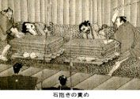
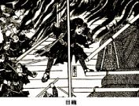
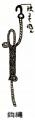

| 捕物の話（二）鳶魚江戸ばなし | |
| 三田村鳶魚 | |
| (2012) | |
目次
加役は乞食芝居
法の欠陥に躓く
深夜の銭勘定
木製の十手
菓子袋で出入止め
縛り屋の藤掛
新工夫の横田棒
なぐさみ師
手続論からの処分
七十一婆の妊娠
人足寄場
佐渡下しの目籠
水替人足の不成績
桜田門外の喧嘩
女は別囲い
御馬先捕
付人の働き
初日の出まで
道案内の来歴
目明し番太
御名指しの捕物
酒野谷の又蔵
庚申山事件
一尺八寸
相撲と剣術
博奕資金の供給
御代官改造論
口つきがいいので、火付盗賊改と申しておりますが、それよりももっと便利なのは、御先手が加役に勤めるということから、たんに加役と言い慣らされています。『武鑑』〔大名・幕府役人の名鑑〕には、盗賊火方改と書いてあります。
この役はいつはじまったかわかりませんが、慶応二年八月四日に、この役が廃せられました。その最後の当役の人は、戸田与左衛門という人で、同年の『武鑑』にその名をとどめて、それでおしまいになっている。これがはじめて役宅に住まった人で、また、一番しまいに役宅に住まった人でもあります。もと、御先手の人々に命じて、随時に市の内外の警備に当らせたことから、はじまった役柄らしいのですが、『代々記』を見ましても、古いところのことは、一向に書いてありません。真っ先に書いてありますのは、寛文年中に、水野小左衛門・岡野内蔵助・筧新兵衛、この三人の名前が出ております。それに続いて勤めた者を、定役、または本役と申しました。加役というのは、天和の中山勘解由からはじまったことで、増役の方は、享保の高田忠左衛門以来ということになっております。増役は臨時廻りという称もありまして、全く臨時のものですから、増役のあることもあれば、ないこともあるわけで、人数も従ってきまりがない。天明七年のぶちこわしの時などは、五月二十三日から六月十八日までの間、御先手の中から十人だけ、増役ということになって、勤めておった。嘉永六年に黒船がまいりました時には、六月九日から十六日まで、二人増役が出ている。その翌年にまた黒船がまいりました時には、正月二十八日から二月五日まで、十人増役が出ております。
火付盗賊改は、最初は、火付改、盗賊改といって、二つに分れており、各々一人ずつの役柄になっておりました。それが、元禄度になりまして、博奕改というのが一つ殖えて、丁度分科が三つになりました。享保三年の十二月、山川安左衛門という人が御役の時に、三科まとめて、兼帯で勤めることになった。それから、享保十年の十二月、進喜太郎という人の御役の時に、博奕改は町奉行の方の掛りになりまして、また一科目減りました。この享保十年から文久元年までの間は、従来二人勤めであったのが、一人勤めということになりました。そうして、文久二年十二月に、土方八十郎という人の御役の時に、御目付の大久保雄之助という人が任命されまして、享保以来一人勤めであったものが、また定役二人になった。この時に火付盗賊改という役名になって、役高千五百石、布衣ということになりました。布衣と申すと六位相当で、御先手の上座、若年寄支配ということになった。役名がきまり、役高がきまり、格式がきまったのであります。
それまではどうであったかというと、御先手頭の格式で勤めていたので、火付盗賊改の格式というものは別になかった。それでは、御先手頭の格式はどうかというと、今きめられた火付盗賊改の格式と違っていない。ただ、ここで火付盗賊改としての格式がきまったわけなのであります。それと、御先手からきっと勤めるので、加役ということだったのですが、今度はそうでなく、御目付から任命されるということが、従来と変っているところで、文久三年八月に、佐久間鐇五郎が御役になって、これからまた一人勤めということになりました。しかし、組下は、前の土方・大久保両人の組をそのままということで、与力二十騎、同心百人、従来は六十人扶持だったのが、この時から百人扶持ということになって、老中支配ということになった。それから、その年の九月に、大久保雄之助が再勤することになりまして、その時格式を上げて、諸大夫ということになった。諸大夫は五位相当ですから、位が一格上ったわけです。この時はじめて役宅が出来ることになったので、それまでは別に役宅というものなしに、めいめいの屋敷をすぐに役宅に使っておった。文政元年に加役同心の記録した『獄秘録』というのがあります。囚人中の役付が牢内で新入りに対して言い聞かせる言葉が、いろいろ書いてありますが、その中に、「御役所ゑの道筋」というのがあり、役宅のなかった時分の様子が知れます。
御役所をさつてもふつき、大牢出るがいなや、前は塩町、白銀町、色観音を横に見て、いせにはあらねど、お玉ヶ池を通りぬけ、帯は〆ねど小柳町、うぬがこんじやう筋かひ御門、こゝに一つの名所有、さつても広き八辻が原を通りぬけ、亀井、片岡、いせ駿河台のまつ角やしき、御役所は丸に三ツ星、とつてもとつても御慈悲の深ひ、鬼も恐るゝ渡辺孫左衛門様と申上ろ。
この渡辺孫左衛門は、文化十三年七月から、文政元年十月まで、本役を勤めた人で、その屋敷が駿河台にあった。自邸を役宅にしていた頃は、この渡辺に限らず、皆同様なのであります。伝馬町の囚獄へは、寺社奉行からも、町奉行からも、勘定奉行からも、火付盗賊改からも、囚人を入れましたが、これは、伝馬町の囚獄から、火付盗賊改の役所（すなわち自邸）までの道順を教えたもので、調べの度ごとに、伝馬町から引き出して、自邸で吟味したのであります。その仕来りを改めて、ここで、四谷御門内、水野出羽守の上地三千五百九坪余を下付されて、そのうち千七百坪だけを役宅にこしらえまして、元治元年二月に出来上りました。ついで、東土蔵一棟が、慶応元年六月に出来上った。が、大久保雄之助は元治元年十二月に転役致しましたので、この役宅には住まいません。このお役宅に住まったものは、前に申した通り、戸田与左衛門が最初の最後なのであります。
加役は乞食芝居
古いところはどういうふうになっていたかわかりませんが、いずれにしても、市内を巡邏するのがもっぱらの仕事であったのが、天保以後のところになりますと、訴え所があって、詮議方という者がいる。これは与力と同心とで持っているのです。それから、召捕方があって、これは同心がもっぱらやる。町奉行所と違いまして、訴え所はありましても、民事はない。皆刑事ですから、仕事は一方づいて片づきがいい。その代り、仕事の幅は広いので、江戸市中のみならず、江戸回り――その他御料のところに起った事柄は、取り扱うことになっておりました。江戸の者は、町奉行や勘定奉行は檜舞台、加役は乞食芝居ということをいっておった。町奉行の白州はもちろん、勘定奉行にも公事方がありまして、民事・刑事ともに白州があるのですが、その方は万事きちんとしていて、堂々たるものである。加役の方は、もっぱら刑事ばかりといううちにも、無宿者を扱うので、すべてのやり口が荒っぽくてぞんざいですから、乞食芝居と申したのであります。現に火付盗賊改という称えにしても、いつまでもきまらなかったくらいで、従って、役向きについてのことも、寛政七八年に定役を勤めた森山源五郎の書いたものを見ますと、古い御仕置伺帳ただ一冊が引継ぎ書類になっているだけで、勤め方の控えもなければ、「代々記」もない、どういうふうに仕来っていたかもわからぬような有様である、ということがあるくらいで、すこぶるきまりが悪いのです。それもそのはずで、この役は、制度とか法律とかいう方の向きには出来上っていないので、綱吉将軍の時が一番火付盗賊改に名高い人が大勢いた時ですが、その人達というものは、いずれも御先手の中の腕っこきで、評判者の中から選りすぐった人達である。久永源兵衛でありますとか、中山勘解由でありますとか、久貝忠左衛門でありますとか、特にこういう人間を擢んでて任命したのでありまして、この人達は荒者という評判を取った人ですが、その心持・風尚には、一種おもしろいところがある。いかにも法を三章に約すといった調子のところがあって、後々のきめのこまかい、こせこせした法文などでは、どうしても出て来ぬ味わいを持っているのです。
久貝のごときは、自分の組下から、当時御法度になっていた六方者――博奕を打ってあばれ歩く者――が出て検挙された、それを聞いて、自分は御役を勤めていながら、組下にそういう者が出ては相済まぬ、と言って、憤死してしまったというくらいの男です。そういう激烈なだけの男かと思うと、これはまたなかなかの数寄者でありまして、ふだん八畳敷の座敷におって、その居間は仕切ると長四畳になる。その仕切りの襖に、狩野養朴に八景の図を描かせた。それもただ描かせたんじゃない。その襖をどういうふうに引っ立てても引き違えても、八景がちぎれちぎれにならぬように描かした。こういうこともするのです。またある時は、お客を大勢しましたところが、久貝の庭には、信斎松と申して、なかなか名高い十三蓋の松があった。この松は淀の城主でありました永井信濃守尚政入道が寵愛されたもので、尚政は晩年信斎と号したところがら、信斎松と申したのでありますが、それを自分の庭へ移し植えたのです。これは当時としては容易ならぬ物好みで、久貝はそういうこともやった。さて、そのお客の一人が、有名な信斎松を眺めて、これは十三蓋あるが、もう一蓋減らしたら、さぞいい眺めになるだろう、と言って評判したのを、亭主の久貝が聞きまして、いかにも十二蓋にしたならばよく眺められましょう、と言うかと思うと、すぐに家来に言い付けて、上の一蓋を切り取ってしまった。あたかも夜中であったのに、時を移さず切らせたのです。
中山勘解由についても、随分いろいろな話がある。酷吏であるから、かえってよくおさまりがついたのだ、といって褒められてもおりますが、この勘解由は、元来なかなかの仏者でありました。それが、六方男立てのあばれ者どもを鎮撫する命を受けた時分に、すぐに仏壇をぶちこわして、今日からはもう慈悲では治らない、というので、少しでも風体の変な者は、取っつかまえて、詮議もせずに斬ってしまった。それですから、例の旗本奴・町奴の検挙を二度ほどやりまして、首尾よく鎮静させることが出来たといわれております。その苛酷な、向う見ずな中山の話として、二人八左衛門という話が伝わっている。これは、六方者の中に、向溝八左衛門という者がありましたが、大変仲間が多くて、ひどいあばれ者だというので、こいつを押えたところが、ほかに同姓同名の者がまだあるというものですから、つかまえたやつを処分せずに牢に繋いでおいて、まだつかまえない方が本物か、すでにつかまえた方が本物か、調べようとした。そうすると、一度は隠れて姿をくらましたやつが、私がお尋ねの向溝八左衛門でございます、私故に他人に牢舎の苦しみをさせるということになりましては、どうも辛抱出来ませんから、逃げて逃げられぬことはありませんけれども、他人に迷惑をかけるわけにはまいりません、と言って、自首して出て来た。そうして、この上は、すみやかに、先にお捕えになりました者を御放免を願いたい、という申立てを致しましたから、中山が両人を対質させてみた。前につかまえたやつの方は、私の方がお尋ねの八左衛門に相違ございません、只今までは、何とかして、言い逃れることが出来るなら言い逃れようと思いましたので、かれこれ陳じておりましたが、私に気の毒だと言って名乗って出る者があります上は、そういう者を罪に落して、身代りで助かるなどということは、本意でありません、と言う。二人とも、互いに自分が本物だと言って譲らない。それを勘解由がつくづくと聞いておりまして、今まで聞き込んでいるところによれば、旧悪免じ難きものがあるのであるが、只今、両人が義を立てて、堅く守っているところを見ると、それほど義の堅い者ならば、これから後、悪いことをしようとも思われない、両人とも、その心をいつまでも持っていて貰いたい、なにぶん向後を慎しんで暮すがいい、と言って、二人とも放してしまった。ろくに詮議もせずに人を斬ってしまうような勘解由が、この向溝八左衛門に対して、どっちが本物ということもきめず、二人が本当に罪を争うのを聞いて、すぐに放してしまった心持というものは、ちょっと物に喩えるのもむずかしいと思います。
まあそういったようなわけで、大体荒者の多い火付盗賊改の中に、また随分変った人もある。宝永二年六月六日からこの御役になって、同五年四月に勘定奉行に栄転した平岩若狭守――この人の裁判ぶりというものは、中山や久貝の畠とは大分違って、まことに治った世の中に相応するやり方をしております。それはどういう按配かといいますと、平岩という人は、もと禁裏付でありましたから、所司代の松平紀伊守とも懇意だったので、紀伊守が江戸へ出て来られた時分にお訪ねした。その時、松平紀伊守が、江戸表の御役は段々御苦労に存ずるが、なにぶん江戸は京都と違って人数が多いから、罪人も多いことであろうし、従って死罪になる者が多いであろう、その辺はどんなものか、と言って尋ねられました。平岩はそれに答えて、いかにも仰せのごとく、江戸は人数も多く、従って罪人も多うございます、しかし死罪になる者は存外少うございます、と申しましたので、それはまことに結構なことであるが、死刑をきめるにはどういう仕方をなさるか、と言って、重ねて尋ねられた。そこで平岩が申すのに、御大法の通りでありますから、別段致しようもございませんが、私はまず三奉行に相談を遂げます、そうして罪をきめるのみならず、いよいよ死刑にきまった者は、更にその前日に呼び出して、今度お前の犯した罪は、どうしても死罪を免れ難いものであるが、今まで申し述べたほかに、まだ何か申し開く筋がありはせぬか、その辺のところを十分考えて申し立てるようにしろ、百に一つも申し開くことがあれば、また取りはからい方もあるから、と言って聞かせます、そうして同じことをもう一度念のために申し聞かせて、申立てを聞いてみますが、どうしても罪を減ずべきことがない場合に、この上は是非もないから覚悟するがいい、成敗しなければならぬ、ということをはじめて申し渡します、そういうふうに致しますと、囚人の方でも、いかにも仰せの趣は得心致しました、今更何とも恐れ入りました次第でございます、まことにごもっとも至極でありますから、死罪になりましても、さらさら存じ寄りはございません、と言って、ありがたく処分を受ける、まずそういうふうに致しております、ということでありました。この扱いをみましても、被告の利益になることを剰さず申し上げさせる方法を取ったので、その上に、従前の火付盗賊改と違って、自分だけで罪を決定せずに、三奉行に相談して、無理のない処分をしている。後来火付盗賊改が刑罰を専断しないという例は、この平岩若狭守あたりから始まったものではないかと思われます。
法の欠陥に躓く
何に致しても、こまかくこせこせと法律的に出来上っていない御役でありまして、軍政の名残りをとどめたものなのですから、だんだん世の中が治ってきて、制度も整ってくれば、法律も綿密になってくるにつれ、従来のやり方そのままにやっていたのでは、その役向きの人間にやり損いが出来易い。これは、世の中の有様が変ってゆくことと、法律の欠陥から起る話でありまして、その失策の先頭に出てまいりますのは、定役の方でなしに、加役の方でありました。この御役を勤めました者は、定役が延人員にして百十七人、そのうちで罰せられた者が八人ある。加役の方は百三十五人ありまして、そのうちで三人罰せられている。増役は五十二人で、この方には一人も罰せられた者がありません。これは事件を扱うことがないから、自然処分されることもないわけであります。
この失策の第一番に出てくるのが、加役の中根主税という人です。中根は元禄十二年閏正月二十日に八丈島へ流された。火付盗賊改の三役を通じて、これほど重い処分を受けた者はありません。この罪状はどういうことであったか、委しいことはわかりませんが、遊女屋に対して闕所処分を行います時に、その所有財産を売り払って、その金は幕府の御金蔵へ納める、これは普通のことなのですが、中根は、そこについている遊女どもを売って金にして、その分も御蔵へ納めた。それが科条になっております。綱吉という人は、江戸時代に一番多く法律をこしらえた人で、法律将軍と申してもいい人であるだけに、闕所処分をするについて、遊女を動産・不動産と同じように見て、それを売り払って金にしたということが、大なる不都合であるというところから、こういう処分が起ったらしい。この役柄の者を罪人にするということは従来ないので、それをするのがすでに飛び越えた話でありますが、それよりも、こんな重い処分を中根主税に加えるということが、随分思いきった話である。しかるに、綱吉は、この極度の処分をしている。これは江戸時代の法律を研究する上からも、大いに注意すべき事柄であると思います。
それから後々では、もっぱら無宿者のみを取り扱うことになっておりますが、火付盗賊改は何も無宿者ばかり扱うという筋合のものではなかったのです。ただ、武士はそれぞれ頭支配があり、町人であれば町奉行、百姓であれば勘定奉行というふうに、支配がきまっておりますから、手に残るのはやり場のない無宿者ということになったのであります。それも中山勘解由の例などをみますと、武士も、町人も、無宿者も、皆一緒に処分しておりますし、現にこの遊女屋の処分なども、後々でありましたならば、町奉行に渡すべきものでありましたろう。
その次に処分を受けましたのも、やはり加役の船越五郎左衛門という人であります。これは享保二年五月に免職になりましたが、本案は罪を論ぜずということになりまして、十一月に定役の方に替りました。一度免職されたというだけですから、処分としては軽い方ですけれども、この軽い処分を受けた事件というものは、またいろいろな関係のあることで、法律の不備をよく表している話であります。このことは、新井白石が『折たく柴の記』に、やや委しく書いております。その事柄が後の方で役に立ちますから、一通りお話しておくことに致します。
船越が免職処分を受けましたことは、正徳五年十月に、越後国蒲原郡の安代・戸口両村の境に野原があって、その原の中に、大勢の仲間を持った大泥坊がいるということを、三州立石村の嘉右衛門、武州妻沼村の七郎右衛門という者から訴えがありました。そこで、この両人を案内として、組同心の松野市兵衛・田沢勘太夫という者を遣しまして、その月の九日に、盗人の親方である五右衛門と、その子の伊右衛門と、つき従う者五人を召し捕りました。それから、この押えた囚人を、安代村――これは小浜孫三郎という人の知行所ですが、ここへ預けようとすると、自分の方の住民でないから預らない、と言う。戸口の方は新発田の溝口伯耆守の領分ですが、やはり、自分の村の者でないから預らない、と言う。五右衛門の住居というものは、この両村の境にあるので、宅地三反ほどあって、戸口村に近い方にある。けれども、おれの方の分でない、というので、両方の村方が譲り合って、その犯人を預らない。仕方がありませんから、御料所へ預ける方がよかろう、ということになった。そこは茅原の御代官所でありまして、能勢権兵衛という人の陣屋でありましたが、両村で預からぬというものを、無関係なところにある当代宮所で預るわけにはゆかない、と言う。召し捕った同心二人は、ひどく困ってしまって、江戸へどのくらいあるか、距離の近い方へ預けよう、というので聞いてみると、新発田へはそこから八九里あって、江戸へは百里余りある、出雲崎は亀田三郎兵衛の代官所で、そこへは六七里あって、江戸まで八十里余りだから、この方が近い。とにかくそこへ行った方がいい、ということになって、出雲崎まで引っ張って行って、預かって貰おうとすると、盗賊を押えた時に、その村方へ預けるのは昔からのきまりである、そのきまりに外れて預かることは出来ない、と言って、受け取らない。松野・田沢の両人は、そうやって、あっちへ行き、こっちへ行きしているうちに、路用はなくなってしまうし、途中に鉢崎の関所というのがあって、そこを越えるには証文がなければならない、囚人を連れて通ることが出来ないので、いったんつかまえた五右衛門以下を放免して、自分達だけ江戸へ帰りまして、その趣を頭の船越へ報告致しました。
それから十一月朔日になって、再び前の同心二人を越後へやることになり、今度は新発田藩へも、幕府から命令があった。二人は二十七日に到着致しまして、五右衛門親子ほか三人を捕え、今度は新発田へ預けた。なおその余の者を捕えて、溝口の手で警護して、江戸まで引っ張って来ましたので、それを船越の手で吟味して、勘定奉行へ引き渡しました。勘定奉行の白州になってみると、五右衛門は茅原村の百姓平三郎という者の子で、幼年にして孤児となり、母方に引き取られて世話を受け、方々転々して奉公などをして、ようやく成人した者である。それから農業に従事しまして、十二年ほど前に、安代・戸口の両村へ頼んで、地面を分けて貰い、そこで耕作しているので、両村の者は五右衛門を村の番太にしました。近辺の者一戸について、毎年米一斗二升、大豆若干ずつをくれて、泥坊なんぞの防ぎ方を頼んでいる。それというのも、五右衛門は、現住所へまいります前、二年ほどどこへも寄りつくところがなくて、盗賊の群に投じていたことがある、自然その仲間に心易い者がありますから、おれの住っているところを荒してくれるな、ということで、そういう方面の人間と約束して、怪しいやつが来たら防ぐようにしている。そのために、両村には久しく盗難というものがないくらいになった。それですから、私の家に刀剣などのありますのは、不時に不埒者が来た時の防ぎのためで、大勢いろいろな者がおりますのも、どこにも身を寄せるところのない者を養いまして、昼は田畠を作らせ、夜は村々を巡回して警備の役をさせる、自分は村方から米や大豆を貰いますし、また自分で働きも致しますから、泥坊などをしないでも、何も不自由なことはありません、という申し立てをした。それなら、なぜ船越の役所で、強盗殺人をやった旨を白状したか、と尋ねたところが、なにぶん拷問がひどいので、どうせ仕方がないから、早く苦しみを逃れようと思って、心にもないことを申し立てたのでございます、村方についてお調べ下さいますれば、本当のことがおわかりになりましょう、自分が盗みをしたというのは、全く誣告である、という答えでありました。それから村方の方へ照会してみると、安代・戸口のほか、新発田領十三箇村から、村の警戒を依頼するという書付、宝永四年八月二十三日付のものを提出しました。なお、新発田領の大庄屋からも、五右衛門が当地に住っているために、強盗とか、殺人とかいう事件が大いに減じたこと、また、そういう事件が起った時に、いろいろと取り鎮めたり、取り押えたりしたような功績のあることも申し上げた。
そこで、何しろ十二年間も、その近辺の村を穏やかにしたという功績は見捨て難いから、たとい以前盗賊の群に入っていたという旧悪があるにしても、これは宥免したらよかろう、また、船越の同心がいったんつかまえた五右衛門を放免して、自分達だけ江戸へ帰ったのも、まことに余儀ない取りはからいであるし、殊に二度目に相違なく前の通り捕物をしたことは、老巧の仕方であるから、その適宜の処分を賞美すべきところである、というので、罪を論ぜぬことになったのです。
この話を読んでみますと、当時の法規の不備であったこと、村々の番太というものが、どんなふうであったかということも考えられる。村によっては、番太も大親分で、手下を使って手広くやってもいるし、近辺の者どもから給与を受けて、相当に暮してゆけるものだということもわかります。のみならず、火付盗賊改の詮議というものが、こういう並々でない人間にとっても、辛抱出来ないほどに荒々しいひどいものであったということも、やはりこの話でわかると思います。しかもこれくらいのことでは、まだ処分を受けないとすると、処分された火付盗賊改のごときは、何程のことをしたか、想像に余りある次第であります。
その次に起りましたのが、定役の山川安左衛門、これは享保十年十二月九日に、役を取り上げられた上、差控えを命ぜられております。この人は、無宿伝兵衛という者の火付を捕り違えた一件で処分されたので、このことは『江戸の盗賊』の中にもいっておきました通り、般若面の源七らに欺かれたのです。つまり悪い目明しに誤られたのですが、その時に、山川の組下の者が賄賂を取ったということがある。これは、鬼子儀兵衛という者があって、いろいろな名義で金を取って来まして、山川の組下の者が巡回に出る先で、それに御馳走したり、金をくれたり、吉原辺へ行った時には、遊女を揚げて遊ばせたりした。そういうことが暴露致しましたので、頭の山川に先立って、十月九日に配下の与力の菅谷忠次郎・同平太夫、同心の椎名嘉右衛門・土屋半助・清水平内・福本新八・飯田林右衛門、それから鬼子儀兵衛、これだけの者が死罪になり、同心の田村団四郎・糸賀三右衛門の両名は、遠島の処分を受けております。
それから、加役の方の飯田惣左衛門という者は、享保十一年二月二十三日に、閉門の処分を受けた。これは丁度山川と同じことで、火付といってつかまえた長吉という者が、火付でなかったためなのです。定役の細井金右衛門、これは、明和四年の九月十六日に、逼塞を命ぜられた。これも、無宿源助という者を、火付の捕り違いをしたための処分です。定役の遠藤源五郎も、明和四年九月十日に、差控えを命ぜられている。これは、委しいことはわかりませんが、囚人を赦免することについて、手違いを生じた処分のようです。定役の永田与右衛門、これは、文政十一年十一月二十二日に、百一日の差控えを命ぜられました。罪のない者を大勢縛った、召捕方が粗忽であるというので、処分されたのであります。
まずこういったようなことがあったのですが、まだこの後に、いい方と悪い方とについて、沢山話がありますから、それをだんだんお話するように致しましょう。
深夜の銭勘定
山川安左衛門の跡役に出ました進喜太郎という人、これが、享保十年から十三年まで、満二年ばかり勤めております。この人は正直でもあり、いかにも温和な人でもある。従来、火付盗賊改といえば、荒者が多くて威勢を振いますから、何か鬼神のように恐れられてばかりおったのですが、この人はまたすっかり人間の柄行きが違うので、すべての振る舞いも大分違っております。ある時同心を連れて夜回りに出かけまして、馬喰町へさしかかって来ますと、そこに幸手屋茂兵衛という旅籠がある。その二階には大分人が集っているらしく、声高で何か言っているのみならず、銭の音が大変する。もう夜更けのことでありますから、なかなかそれが耳立って聞えます。泊っている旅人どもが、慰み事でもしているような様子なので、進喜太郎が、あの家を起せ、と言って、連れている同心に戸を敲かせました。けたたましく戸を敲くので、内からはどなた様でございますか、と言う。夜回りに出て来た火付盗賊改の進喜太郎である、早くあけろ、と言うと、何しろ役方のことですから、家の者もびっくり仰天して、戸を開けて迎え入れる。亭主の茂兵衛を呼べ、ということになった。夜更けに火付盗賊改が乗り込んで来たのだから、家の者も驚いているし、亭主もわなわなふるえているような有様である。進喜太郎は出て来た亭主を見て、悠々としてこう言った。何もわれわれがここへ来たところで、少しも慌てるには及ばない、今ここを通りかかったところ、二階に大勢集って、声高にものを言っているのみならず、燈火をあかあかとつけて、夜更けというのに、銭の音をざくざくさせている、そういうことをしていると、博奕でもやっているかしらんというふうにも思われるが、まさかそういうことはあるまい、ただ夜更けに多人数でごたごたして、銭の音をさせるなどというようでは、人聞きもよろしくない、それは、多分売溜めの銭でも勘定して、緡へでもさしているのであろうと思うが、旅の者で昼間は忙しくもあろうけれども、向後は銭勘定をするような場合にも、なるべく昼間するように、昼間出来ないにしろ、宵の口までにそういうことを済まさなければいけない、必ず夜更けになって銭勘定をしてはならぬ、今後もあることであるから、夜更けてそういうことをすると、何としても厳しく糺明しなければならぬ、よく心得るように、というわけで、実際は博奕をやっていたらしいやつを、銭勘定ということにしてしまって、注意を与えただけで済ませました。亭主の茂兵衛はいうまでもなく、泊り合せて手慰みをしていたやつも、どうもありがたい方だ、と言って涙をこぼして喜んだ。いつも人をつかまえてばかりいる火付盗賊改が、かえって、罪人を出さない方に振り替っているのですから、喜びもしましたが、驚きもしました。
それからまた、夜回りに出た時分に、わざわざ無提燈で巡回しました。そうして、浅草の諏訪町河岸を、ごくひそひそとして歩いておりますと、町内の番太郎が九ツの回りに出て、拍子木を打って回っているのに出くわした。それが進喜太郎を見かけたので、そこを通るのは誰だ、と言って聞いたけれども、別段返事もしない。二人で回っている番太のうちの一人が、棒をもって打ってかかって来たものですから、供についている同心が、これは火付盗賊改の進喜太郎殿である、と言った。番太はびっくりして逃げてしまいましたが、これは何事かむずかしいことになるだろうというので、皆案じておりますと、翌日になって、いかにも奇特に夜回りをする、と言って、褒美に金子をくれた。――進喜太郎という人は、こういうやり方でありました。
木製の十手
それからまた、別所孫右衛門という人がある。これは元文三四年のところを勤めた人で、この人もまた、荒っぽくない方の人でありました。火付盗賊改というものは、頭も、与力も、同心も、皆十手を持っているのですが、この孫右衛門は、登城しまして、躑躅の間の控所に刀と十手を置いて、ちょっと他の席へ出ていたことがある。丁度御老中の土岐丹後守がそこを通って、時計の間の方へ行かれる時に、これを見て、坊主衆を呼んで、あすこに十手があるが、あれは誰のだ、と言って聞かれた。あれは御役を勤めております別所孫右衛門の十手でございます、と答えますと、ああそうか、火付盗賊改を勤める者は、成程十手は離せまい、あの十手を見たいから、ちょっと持って来い、と言われた。御坊主が持って来てお目にかける。土岐丹後守が手に取って見ると、十手というものは鉄でこしらえてあるはずなのに、この十手は鉄でなく、卯木でこしらえた棒なので、黒くなっているのは黒塗りにしたのである。土岐丹後守も大いに感心されて、いかにも心のついたことである、孫右衛門は実に感心な人物である、表を厳重に見せているけれども、内は柔和でなければならぬという心持で、木でこしらえた十手を持っているとは、頼もしい男である、と言って賞讃された。これはその通りで、勤向きも厳重であるが、当りが荒いなんていうこともさらにない。この人も罪人を多くするのに骨を折るような人ではなかった。享保度に入りますと、火付盗賊改の職分に何も変ったところはないが、人物は大分前と違っております。世間の評判もそうで、前にはどしどし片のつくのを喜んだのですが、今度はそうでなしに、進喜太郎とか、別所孫右衛門とかいうような人が、評判がいいことになってきたのであります。
菓子袋で出入止め
向井兵庫という人は、享保十五年から十七年まで勤めた人です。これは大変親孝行な人で、母の気に入った老僕に八右衛門という律義な者がありましたが、ある時、向井の母親が、屋敷の向こうへ八右衛門が腰掛茶屋をこしらえたいと言うから、差し支えないことならば、許してやって貰いたい、ということを言われた。そこで、向井も、御役を承って以来、願い・届け等のためにいろいろな人が屋敷へ来る、門前へ一箇所ぐらい腰掛茶屋を許しても差し支えない、殊に長年忠実に勤めた八右衛門の願いならば、彼にふさわしい願いでもあるし、許して遣しましょう、という返答をした。そこで、その趣を向井の老母から八右衛門に伝えますと、早速八右衛門の女房が、お礼でございます、と言って、菓子袋を持参しました。それを兵庫が知りまして、只今八右衛門から菓子袋を差し上げたそうですが、それは私から代りの菓子を差し上げますから、お下げを願いたい、と言って、自分の方へ貰って、それから八右衛門を呼びにやった。お前は年来奉公ぶりよろしく勤めてくれたのでもあり、殊に母人のお言添えもあることであるから、門前へ掛茶屋を許すつもりでおったが、今日わが母に対して追従することを認めた、これはいささかな物ではあるが、おもしろからぬことだと思うから、只今持って来た菓子袋はお前の方へ戻す、そうして私が御役を勤めている間は、お前の出入りを差し止める、腰掛茶屋をこしらえることも、許すつもりでいたが許さない、と言い渡した。八右衛門は驚いて、早速母堂のところへまいりまして、どうか一つお執り成しを願いたい、と言って嘆願する。向井の老母が、向井に対して執り成されたけれども、向井は聞かない。思召でありますから、許してやりたいところでありますが、ただ掛茶屋を許すということを申しただけで、あなたに対して追従がましいことを致すようでありましては、今後その店が繁昌致すにつけ、また長いこと屋敷に勤めていた八右衛門であるだけに、何様のことをしでかしてくるかわかりません、それが気がかりですから差し止めました、私が御役をやめました上は、従前通りでよろしゅうございますが、御役中は出入りも差し止めます、と申しました。こういうことをやるにしても、荒っぽくなく、しかも綿密に行きわたるという人が、享保度には評判がいいことになったのです。
この人の下にいた与力に、依田佐介という人がありました。この人は、常に同輩に向って、こういうことを言っておった。見回りに出てみると、どれが盗賊かということは、明白にわかるものである、しかし、それを皆つかまえれば、限りもない数になる、盗賊といっても、困窮の余りにするような泥坊は、今日の時勢からいうと、それを一々くくし上げていっては、今日の下々の者は皆縛らなければならぬかもしれない、それだから、特別にひどい、悪いやつだけつかまえて、その余は見逃しておく方がいい、ということであった。畢寛、役人の評判が変り、採用される人物が変ってきたというのも、享保という時世に引っ張られてのことであります。前に評判のよかった人がきっと評判がいいのでない、ということから考えて、時世の変ったことがわかる。享保になると、法律の世の中であるけれども、法規法令の通り、綿密にのみはやれぬ時である。あまりそれに拘わってのみもやれない。強くもやれなければ、弱くもやれない。あまり大まかにもやれない。法律はだんだん委しくなっておりますが、それを執り行うにも、手加減がいる世の中になってきたのであります。
天保度の人間――私などが昔話を聞いた老輩は、よく「公の御沙汰」ということを申しました、罪があっても罰しない、過ちがあっても咎めないことを、「公」と心得ていたようです、あるいは、寛大を通り越して放漫になったのをも、「公」といっておりました。ただ、大国を治めるは小鮮を煮るがごとしで、コセコセと魚箸を遣っていれば、小魚などは、頭も尻尾も、肉も骨もゴチャゴチャになってしまう、なるべく手を付けずに煮上げるのがよろしい、などという説明も聞かせられたものです。そうして、老輩は幕末の政治に感服しないことを、誰もいっておりましたが、これは、寛政以来、綿密というか、精緻というか、よく行き届くというか、大綱よりも細目について緊しくなってまいりました。殊に、天保の水越〔水野越前守〕などは探偵づくしで、病的な神経過敏さをもって行われましたから、老輩はその父祖の時世を振り返って、目で見ない昔の政治が懐しかったらしい。その懐しがられた時世は、享保・元文の際にあったのです。その頃はだんだん法律が出揃いまして、世の中に筋道が立ってまいりました。しかし、新しい法律の世の中になっても、紛々たる条規に泥まない人心に対しては、因循を楽しんで改作を重んずということもあります。徂徠の『太平策』にも、「ナマジヒノコトヲセムヨリハ、老子ノ道ヲ行ヒ、文帝ノ治メ、聖人ノ次ナリト知ベシ」といってもございます。まだ慣れもせず親しみもない民庶に、今は整頓したからといって、急に法規をもって臨むというようなことでは、吏治を得られるものではございますまい。幸いに、新しい法律の世の中に、旧人が残っておりまして、条文に拘泥せずに、要領を得た処置をいたしました。それが「公の御沙汰」なるものであったのです。その「公の御沙汰」は、一概に行えば、たちまちに弊害をもたらすことになりましょう。もちろん、時世によっては、いろいろに変通しなければなりますまい。中山勘解由は二人八右衛門を放免したのですが、私に話をしてくれた老輩などは、進喜太郎や別所孫右衛門や向井兵庫のやったことを、いつでも「公の御沙汰」だと思っていたようでございます。
ある時、向井が、東海道の戸塚に六十人ほどの泥坊団体があるから、召捕りに行くように、ということを、依田に言い付けた。相手方は大勢だから、同心を十人ばかり連れて行け、と申し付けたところが、成程、大勢おります泥坊のことですから、仰せのごとく、同心を十人連れて行っても、手が足らぬかもしれません、けれども、御威勢で取り押えることになりますれば、私一人でも用が足りると思うから、きっと大勢連れなければならぬこともありますまい、と言って、いつもの通り六人連れて、十二人ほど押えて帰りました。向井は、小勢でまいって大勢押えたというので、依田に褒美を与えようとした。ところが、依田は、御褒美を出されるのはもってのほかでございます、御威光によって土地の者に言い付けて捕えさせたのでありますから、小勢でも大勢でも、人がなくても、用が足りることである、従って、御褒美を受けるようなことではございません、仰せのごとく、戸塚には泥坊が六十余人おりましたが、その全部はわざわざつかまえませんで、そのうち目立った者だけ押えてまいりました、しかし、近年の農村の様子を見ますと、なかなか取立てが厳しゅうございまして、その上に、村がかりがだんだん多くなっている、困窮のあまり、よんどころなく盗むというような具合に、戸塚は相成っております、盗人をことごとく押えるということになりますと、村中みな縛らなければなりません、また、そこだけみな捕えてしまっても、もともと、農村が立ち行かぬために泥坊するようになったのですから、盗人がそれで止むわけはございません、どうしても泥坊をなくそうというならば、村がかりを減すよりほかに仕方がありますまい、そうして、彼等が生計を営んでゆけるようにしておやりになれば、泥坊する者はなくなりましょう、と申し立てました。そこで、この趣を向井から幕閣へ上申致しまして、特に戸塚付近のところを調べてみますと、依田が申し立てた通りでありましたから、新しいかかりものなどは、みな免除するようにした。それのみならず、盗人だということで縛られた者も、みな許してしまった。こういうような取りはからいもありました。この時分の田舎の者は、まだまだ正直な者が多かったので、都会風の生活とは全く様子が違っている。そこへ不時なかかりものを多くしたので、罪人が出るようになったらしいのです。その源を究めて、ただにわかに罪を咎めるというふうでないやり方をした。事を論ぜずに心を論ずるというゆき方です。こういうやり方があったということも、またこの時世のいかなるものであったか、ということを考えさせるものかと思います。
縛り屋の藤掛
それから、藤掛伊織という人、これは元文三四年というところを、加役を勤めた。その時分に「心得違之儀有之、御咎可有之処、出精相勤候ニ付、無其儀御免」ということでやめられたのですが、その後火付が多くなったので、一年置いて、延享元、二年と定役を勤めました。この人のことは、前に『江戸ッ子』の中にも少し言っておきましたが、これはなかなか縛り屋の方で、少しでも疑わしい者があれば、一向に仮借せぬというやり方でありました。それですから、元文四年の落首が二首出ている。
藤懸は曾我殿原の子孫かやいほりの内にたへぬもつかう
三の字の紋は曾我やら藤懸のいほりの内へもつかうがゐる
「三の字」というのは、藤掛の定紋です。「もつかう」というのは、「おだてともっこに乗りたくない」という、囚人の中に、足の利かぬ者や病人があった時に、乗せるものであります。
また寛保三年に落首が二首ある。
丸々と治る御代の御法度はすみずみまでも申ふくめん
今年よりみをのやとこそなりにけり藤かけ清にしころとられて
これは覆面頭巾という頭巾を差し止めましたので、それについての落首です。藤掛という人は、なかなか被り物をやかましく言いました。覆面頭巾というのは「目ばかり頭巾」のことで、寛保度の流行物でありますが、藤掛はこれを禁じまして、被っている者があると遮二無二押えた。頬被りをしていた者も、無論押えたそうです。頬被りというものは、昔からあって、木綿の三尺手拭でするのですが、麻にいろいろな模様を染めたやつで、頬被りをするのがある。元禄度には五尺手拭――手拭と申しましても、表は縮緬なので、小紋のもあれば黒のもある。それに紅の裏のついたやつで頬被りをして、下で結んでぶら下げる。『忠臣蔵』の芝居で、力弥が一力へ来る時に被って出て来ます、だから、手拭といっても、風呂場で遣うのとは大分違うのですが、頭巾と同様に面体を隠すから禁じたのです。藤掛はこういうものを禁ずるほかに、挙動の怪しい者はとにかく押えた。怪しいと思うと、この人は打棄っておけなかったらしい。そこでこんな落首があります。
寄れば取りさわれば取てみたがるが手かけ足かけ扨は藤懸
上り藤掛回りつゝ三文字まだ伊きをひの織をしたかや
とる人は伊織ませぬとまふせども丸に三人とらぬ日もなし
そういうふうでずんずん縛りますから、これが大変に江戸の市民を威嚇するように思われた。しかし、この人のやり口のために、当時江戸市中ですこぶる迷惑しておりました「きおい組」を退治する効能は、たしかにあったので、この人のために「きおい組」は衰えたのです。これは、中山勘解由が、旗本奴・町奴というあばれ者を抑えつけたのと似ております。ただ、あれほど相手が手荒くないだけに、こっちも中山ほど手荒くはない。そうして中山は骨折っただけ褒められているのに、藤掛は骨を折っていながら褒められない。江戸市中から恐がられたことも同じであり、市民の迷惑を除いたのも同じなのだから、中山が褒められるほどは、藤掛も褒められていいはずである。しかるに、中山は上々の首尾で大目付になりましたけれども、藤掛はごく首尾が悪く、御役御免ということになってしまいました。
新工夫の横田棒
そうかと思うと、中山どころじゃない。横田源太郎なんていう人は、天明四五年というところを勤めた人ですが、これはなかなか剛勇な、例の荒者でありました。中山が始めたという海老責めと相対して、囚人から恐れられた横田棒というのがある。これは石抱きという責め方のことで、横田は庭先に吟味場をこしらえて、罪人の吟味をする。拷問の道具も一通りではいけない、なんとか工夫しなければ駄目だというので、一尺余の四寸角の木を並べて、その上へ罪人を坐らせる。丁度向う脛へその木の角になっているところが当るので、それから厚さ二寸ばかり、長さ一尺余、幅一尺ほどの石を膝の上に積む。これが石抱きというやつです。
 通例は、まずこの石を六枚積むと気絶する。気絶するはずです。向う脛へ角な木が食い込むのだから、その痛みは非常なものだ。それでもまだ白状しないような強いやつがあると、角木を下に敷いた上に、また脹脛のところへもう一つ入れて、やはり膝の上に石を積む。そうしておいて、後から薪雑把を持って来て打つ。こうすると、膝の節が砕けて、死んでしまうやつもあったそうです。非常に強くって死なないやつでも、足が不自由になってしまって、生涯立つことが出来なくなる。こんなひどいことをした横田源太郎でも、御役御免になっていないのですが、藤掛は「きおい組」退治の功があるのに、どうしてその終りをよくしなかったかという疑いが起る。
それは、藤掛が夜回りに出た時に、御小姓の池田丹波守・安藤丹波守、高家の大沢丹波守、この丹波守が三人で、揃って新吉原から帰って来るのを待ち伏せていた。そうして、従僕を引っ捕えて詮議しますと、馴染の妓に見せるために、衣冠を持っていた。それを途中で現品を押えましたから、この三人は大不敬罪の処分を受けなければならなくなった。一体火付盗賊改というものは、役名のごとき職責のものであって、武士の取締りをする役目のものではない。ことに御小姓だの、高家だのという、位置の高い者の取締りをする役ではありません。けれども、藤掛伊織は、こういう不都合なことをするのを聞くと、打棄っておくことが出来ないので、こんなところまで手を伸ばした。職掌以外のことをするのは心得違いである、というので処分を受けた。それが根になって、どうもうまくゆかない。手荒いということよりも、厳重な方がいけない。その厳重も犯罪に対する厳重で、職掌に対する厳重でないからいけないのです。それがために、この人は幕府の首尾が悪かったので、こういうことは、時代の弊風も考えられるが、制度という方にだんだん身が入ってきたことがわかる。ただ罪人を沢山出しさえすればいい、というわけではないのです。
なぐさみ師
松平帯刀という人は、寛延二年から四年というところを勤めた人ですが、この人が往来でもって、当時に名高い冬瓜仁右衛門という者を押えた。この仁右衛門という者は、本所吉田町の御小姓を勤める兼松又四郎という人の地面を借りて、そこに家をこしらえて住まっているやつなのです。これがなかなか経歴のおもしろいやつで、元来は中間奉公をしておったのですが、瘡毒〔梅毒〕を患って身体が駄目になったものですから、三ツ目の寄合辻番の番人になっていた。そのうちに身体がよくなったので、冬瓜の立売りを始めて、方々売り歩いた。僅かなことではありますが、これが当って、何分かの金を握ると、今度は博奕場へ出入りする。いい按配に博奕もうまくいって、寛保の初めには、三ツ目の島杢十郎の屋敷へ賭場をこしらえ、そこの貸元になりました。一体、武家地へ町人・百姓どもが地を借りるということは、禁ぜられていたのでありますが、やはり内々は行われていたとみえます。旗本屋敷へ賭場をこしらえたのだから、これは手の入りようがない。これが大いに繁昌して、仁右衛門は名高い男になりかけた。そいつをつかまえたのです。
それから、どこに住まっているか、と言って吟味する。もし住まっているところを申し立てれば、兼松の身分に障ってきますから、私はなぐさみ師でございまして、博奕打ではありません。――これは手慰みということで、職業としているものではないが、慰みに博奕をする、そういうところから、「なぐさみ師」という言葉が出来たので、この時分の言葉とみえます――従って、どこという宿はございません、と言った。そこで無宿というわけで、そのまま牢屋へ入れられましたが、仁右衛門には子分が大勢ありますので、いろいろ嘆願に行ったり、もらい下げに行ったりする者がある。なにぶん現場を押えられたわけではなし、そこまで踏み込まなかったものですから、もらい下げが許された。けれども、無宿者のことですから、預けるところがない。回向院の非人小屋へ預けられることになりましたが、その非人小屋へ皆がいろいろなものを持って行くので、ここで栄耀栄華が出来たらしい。しばらく差し置かれて、御免になりました。こういうふうに、なぐさみ師をつかまえたのはいいが、詮議すべきところも詮議せずに放す。こんなことで放免してしまうから、これから後に、妙に親分とか何とかいう者が、江戸に出て来る因縁にもなる。これは、やはり罪人を大勢出さぬというふうに傾いているところから、「公の御沙汰」が作用して、こんな按配になってきたものと思われます。
手続論からの処分
それから、定役に久松忠四郎という人がある。宝暦八九年に御役を勤めた人ですが、この人などは、内済にしかけた事件をほじくったというので、処分されております。これは、御中間の高部佐市という者の弟に七三郎という者があって、それが旗本衆の大久保九十郎という家へ、度々泥坊に入った。その後、大久保の方では内済にするようにしたので――大久保は小普請組の設楽善左衛門の支配なのですが、支配へもどこへも訴えずにおいた。ところが、久松は、御先手組の跡部九郎四郎という人の家来の根岸久左衛門という者から、大久保の家の盗難の話を聞きまして、あれでは困るからなんとかしてやってもらいたい、ということでありましたから、それを九十郎から頼んだものとして取り扱って、七三郎を縛ってしまいました。これはたしかに盗賊には違いない。が、去年七三郎が泥坊した時分に、盗難品を加役の松平助之丞まで届けた。その届けを捕えた時のこと、すなわち宝暦九年のこととして、そいつを送ろうとしたのです。もっとも、これは御中間の方には御中間組頭というものがありますから、その方で処分してもらえばいい。被害者の方とすれば、小普請組支配がありますから、その方でやればいい。捕えても引き渡せばいいのですが、いずれにしても、訴えない場合には、縛ることは出来ないわけである。九十郎は、一遍松平助之丞へ訴えたけれども、その後内済の話が出来かけましたから、届けずにいたのを、久松が検挙したのです。つまり手続きの上の間違いなのですが、それがために、久松は譴責されている。これが昔の荒者が御役を勤めている時分でしたら、泥坊である以上は、処分せずにおくわけのものでない。手続論などが出てくるはずもないのですが、この時分はこれだけ法律的になっているのです。
松平助之丞も同時に加役を勤めた人でありますが、宝暦八年に無宿清兵衛という者を抑えまして、手鎖をかけて非人小屋へ預けた。非人小屋へ預ける例は今までもあるので、無宿者はほかへ預けるところがないから、非人小屋へ預けるより仕方がない。ところが、その囚人が駆落してしまった。こういう場合には、預り人が処分されなければならないのですが、松平助之丞は、囚人と一緒に手鎖の鍵を非人に預けている。それだから、手鎖を外して逃げたのだということになった。非人小屋へ囚人を預ける時に、手鎖の鍵を預ける先例があるかどうかというと、そんな前例はない。それはありますまい、鎖を鍵ごと預ければ、自由にかけ外しが出来るから、なんにもならない。こうなると、逃した方よりも手鎖の鍵を非人に預けたことが手落ちとして、その方で処分されている。こういうふうに、手続きに関する前例とか、旧習とかいうものに違ったといって、処分を受ける者がだんだん多くなってまいりました。それだけ制度が整ってきたのでありますけれども、やはり荒いことをするのが、火付盗賊改の持ち前であるように思われて、穏やかに扱ってくれたり、法律ずくめにやってくれるようには思われなかったようです。
七十一婆の妊娠
宝暦時分に、番町に金田弥七という旗本衆がありました。この弥七という人は、前年火付盗賊改を勤めた人なのですが、この家には、弥七が子供の時から丹誠を受けた、乳母の古いのが養われている。当年取って七十一になるその婆さんが、何か患い出したような様子でありましたが、どうも悪阻のような按配である。医者にかけて診療してもらいますと、これは妊娠したに違いないと言う。なにぶん年もとっているし、亭主もないのですから、金田の家でも不思議に思いまして、その時分に有名な医者であった数原通玄に見てもらったけれども、やはり妊娠に間違いないということでありました。ところが、それが十月たっても生れません。同じような容態で、二十六カ月日になって、大変苦しんだ上、やっと男の子を産み落した。それが大きな子供で、生れたばかりですでに三四歳ぐらいの大きさがある。産声なども大きな声だし、生れ落ちて二三日もたつと、そこらを這って歩くという、実に不思議な赤ン坊が出来た。珍しいことだというので、金田の親類や朋友が見物に行くような有様でありました。
身体も頑丈なので、ゆくゆく育て上げたら、坂田金時みたいな者が出来るだろう、といって評判しているうちに、一年もたちますと、五歳ばかりの子供ぐらいになる。三年たてば、十歳の子供ぐらいになる。大変大きな子供で、力は大人の三人前ぐらいある。ある時金田の家で庭普請をしている時に、四尺まわりほどある庭石を、人足が五人ばかりかかって、動かしかねておりますと、この小倅がちょこちょこと出て行って、自由に扱ってしまった。いよいよ不思議な子供である、というので、金田の家では秘蔵にしておりました。
ところが、ある日のこと、主人の金田が書見しておりますと、例の子供が竹縁を抜き足して来て、障子の外から内の様子を窺っている按配である。その様子が変だから、なお気をつけて見ていると、子供の様子がすっかり変っていて、眼は鏡のようにギラギラして、血をそそいだような恐しい目付をして、顔の様子も平常のようではない。まるで鬼の面でも被っているようで、息は火炎を吐くような按配に、物凄い形相を見せている。これはけしからんことだ、と思いましたから、金田はすぐに刀を抜いて斬り付けた。二太刀ばかり斬って、斬り殺してみると、頭の後ろの方に角が生えている。いよいよあれは鬼ッ子だった、金田は前に火付盗賊改をして、大勢の者を殺した、その崇りで、金田の家へそういう鬼ッ子が生れたのだ、それも、金田の家の者に崇らずに、乳母の腹へ宿って生れた、といって、江戸中の大評判になったということであります。
これも、やはり中山勘解由の家に、油を舐る赤ン坊が生れた、という話と同様の浮説でありまして、信用することは出来ませんが、そういう話が世間に伝わるということは、火付盗賊改が恐しいものであり、むごいことをするものである、と信ぜられていたために、こんな浮説が行われるようになったのだろうと思います。
人足寄場
それから、後になって、長谷川平蔵、この人は天明七年八月から本役になって、八年の七月に人足寄場をこしらえ、そうして寛政七年五月まで勤めておりました。加役の方で一年勤めましたから、前後九年勤めた人で、火付盗賊改として一番長い勤続者だったようです。
この平蔵の捕物としては、いろいろ名高い話がありますが、寛政元年三月に、関東・東北十余国を荒して、八百人の部下があるといわれた神道徳次郎を取り押えた。これでなかなか知られておりますが、泥坊を押えたということは、長谷川には限らず、いくら捕物の方で凄じいことをしたといっても、元禄以前の人達のように、いつまでもおぼえられてはおりません。
定役の方の徳ノ山五兵衛、この人も随分話の多い人ですが、延享三年九月に、遠州見附で日本左衛門の捕り方に向った。その時は逃しましたが、これは大分評判のことでありました。それから六年おいて寛延四年八月に、相州小田原在で尾張九右衛門という、やはり日本左衛門と同じような大きな泥坊を押えている。更に五年たっては、奥州川俣で、今日本左衛門只吉という者を召し捕っている。本所五丁目の徳ノ山の屋敷には、徳ノ山稲荷――俗に元徳様という稲荷がありますが、これは日本左衛門を祀ったとかいって、後々まで残っているくらいであります。この徳ノ山五兵衛という人は、兄に重朝という人があって、それが親父に先立って死んだ、そこで次男坊の権十郎という人が、親父が正徳三年に亡くなりましてから、その年の十一月に、二千七百石の家督相続をしたのです。これは代々武功の家でもありましたし、ことにこの人もなかなかえらい男であった。権十郎は後に秀栄と申しまして、延享三四年に本役を勤めております。それから後も、ちぎれちぎれではありますが、加役をも度々勤めている。
この徳ノ山五兵衛は、ただ強いばかりの人かと思うと、例の有名な祇園の梶、その娘に百合というのがありまして、その子供に町というのが出来た。それが玉瀾といって、大雅堂〔池大雅〕の妻になった人ですが、これは、五兵衛の権十郎が京都にころがっておりまして、この百合に馴染んで、宝永四年、十八歳の時に、町という子供が出来たのです。それから家督相続をしなければならぬことになって、江戸へ帰ります時分に、百合を連れて帰ろうとしたのですが、これは百合の方から辞退した。あなたは容易ならぬ御身分の人におなりなさるのに、私のような者がお側におってはお為によろしくない、これまでの御縁と思ってお別れ申しましょう、というので、出来た子供は自分の方へ置いて、権十郎だけ江戸へ帰った。そこは、例の頼山陽あたりがうまいことを書いておりますが、権十郎が帰る時に、同棲十一年と書いている。百合という女は、風流めかして、自分よりぐっと年の若い男を引き込んだので、今日の言葉でいえば、権十郎は若い燕というところだったんでしょう。そんなような随分艶っぼい話、山陽あたりが煽り立てるから、随分風流めいた話になるのですが、日本左衛門をつかまえた話も、日本左衛門の名前が大きいので、つかまえた方の徳ノ山は、一向有名にならない。気の利いた方の話でも、百合や玉瀾が名高いので、徳ノ山の方の名は出てこない、といったようなことになってゆく。
こういうことはよく世間にある話で、長谷川の方も、職務として働いたことはあまり伝わらず、人足寄場の話の方が後々まで残っている。当時としては、神道徳次郎というものは大変な泥坊でありましたが、それを誰がつかまえたか、一向おぼえられていない。長谷川を名高くしましたのは、松平越中守定信の命によって、石川島へ人足寄場をこしらえまして、そこへ人足を集める、これを水玉人足と申しました。これは、世話役の者が花色に白の水玉の模様、平の人足が柿色のお仕着を着て、それが水玉の模様でありましたから、江戸中の者が水玉人足といった。このことにつきましては、寛政二年（一七九〇）にすっかり人足寄場が出来上りましたので、三月八日付で、そこへ新しく集められた人足どもへ読み聞かせるようにと言って、御条目があります。その本文をここへ出しておきましょう。
当時新人足共へ為読聞候御条目
其方共儀、無宿之ものに付、佐州可差遣処、此度厚御仁恵を以寄場人足に致し、銘々仕覚候手業を申付、旧来之志を相改、実意に立帰り、職業出精いたし、元手にも有附候様可致、身元見届候はゞ、年月の多少無構、右場所を差免、百姓素性のものへは相応之地所被下、江戸表出生のものへは、出生之所へ店をもたせ、家業可為致候、尤公儀よりも職業道具被下歟、其始末に寄、相応之御手当可有之候、若御仁恵之旨をも不弁、申付に背き、職業不精にいたし候歟、或は悪事等有之においては、重き御仕置に可申付もの也。
この人足寄場というものの出来るにつきましては、安永七年（一七七八）四月、江戸に集っている無宿の者どもを、罪のある者はもちろん、罪がなくても無宿の者は皆つかまえる、無宿狩をしたのです。そうしてそれを佐渡へやりまして、佐渡の金山の水替人足にする、ということであった。それについての令文がありますから、それもここへ入れておきます。
近年御当地（江戸）並近国共、無宿者数多致徘徊候に付、火付盗賊も多、騒敷義共有之、世上一統之難儀に相成候、畢寛右は一二夜宛も、無宿共を留置、宿等致候者有之候故、右体無宿多く致徘徊不届の至に候、依之町方はもちろん、近在共、町役人村役人共、町方村方厳敷遂吟味、前々掟も有之候通、一夜たりとも身元慥ならざる者留置不申様申付、在町共無宿共見掛候はゞ召捕、町方は月番の町奉行え召連可出候、関八州在方は村役人等差添不及、村継に致、月番之町奉行へ送り候様可致候、元来無宿共の儀は、百姓は農業を怠り、町人は夫々の渡世を不致、身持放埓故、無宿に相成、弥給続兼候節は、火付盗賊をも心掛候者共故、懲之ため此度無宿共厳敷召捕、佐州へ差遣候間、在町共無宿召捕訴出候ても、後日仇等致候義は決て不相成候様申付候間、見懸次第召捕可訴出候、若見遁に致置候はば、急度咎可申付候。
これは無宿狩をする劈頭に出した法令なのですが、火付盗賊の予防に、無宿者を掃蕩しようというのです。別段に犯罪はなくても、無宿ならば片っ端から縛る。無宿といっても、宿なし、すなわち住所のない者というのでない、宿なしは住所がないのだが、無宿は一定の住所のないものをいうのでなく、江戸の法律では、原籍のない者を指していう言葉なのです。尊属の申立てによって、ところの名主を経て、町ならば町奉行、村ならば御代官の許可を得て、帳外と申しまして、人別帳から削除してしまう、そこで無籍の人間になる、帳外によって無籍になりますと、それを無宿と申すのです。弾左衛門なり、善七なり、松右衛門なりの手には、それぞれ人別帳がありますから、その配下の者は、無籍者ではございませんが、無宿者は良民であっても無籍なのでございます。これは勘当に伴う処置であって、天明頃までも、父兄が勘当をしますと、町役人または村役人が監督官庁へ帳外処分を申請することになっておりましたが、その後は勘当願いが決定すれば、同時に帳外にしてしまうことになりました。
さて、江戸は掃溜めだといいまして、諸国からいろいろな人間が寄り集る。それはなにも江戸に限ったことではございません。都会地ならどこでもそうなのですが、江戸は大都会地だけに、集り方が多いに過ぎないまでであります。それに、都会地では、農工以外、商売の数が多く、博徒等がよくいう商売往来にない商売、それが彼等だけではなく、随分商売往来に書いてない商売がありました。これが無宿者にも便利だったのです。
無宿狩で縛られるのは、ただ無宿者というのでなく、何の渡世にも有り付けない者です。真面目に奉公しようとしても、無宿者は請人がありませんから、雇ってくれる人もなければ、人宿でも相手にしません。しかし、商売往来にない商売なら、働く気さえ出せば、有り付けないことはありません。有り付きさえすれば、辛抱次第で勘当を許されるようにもなり、従って、人別帳へ再録されることも出来ます。だが、改俊の情いちじるしいこうした人間は甚だ少い。なんとしても、汗を流して働く気にはなれない奴の方が多い。いつまでも浮浪を続けるとなると、博奕、それから泥坊という順序を辿るように成り行く。ここで無宿者が問題になる。
宝暦（一七五一～六三）以来都会生活も変りましたが、農村生活は、変り方が都会よりもはなはだしい。都会同様な生活に驀進しようという意志を生じたのではないが、江戸文化の展開、苦しいものであった旅行が、この頃では遊山旅という名称さえ出来てまいりました。それほど交通の便利が殖え、交通の便利が都会の風を村落に伝播することが早くなり、流行物も一両年の間に行き渡るという有様、わけて農村の副業が発達してきた。機織りは農間の家庭工業として有力なものになり、機業地方がだんだん多くなってきて、いずれの農村でも機杼の声が聞かれるようになり、その地方は概して物資が豊富になる。機織りのみならず、農村の家庭工業は百姓の家を賑やかにする。処々の市場は月ごとに数回開かれて、そこは小都会の観をなす勢いであります。農村の家庭工業の有無は、その地方の盛衰を招く。農業だけでいる村落は、いよいよ貧乏になり、人口も減じてゆく。副業のある村落はますます繁昌になる。市場には程近い宿駅が選ばれて、そこには問屋が出来て、立派な商人があるようになり、仕入れ客も集まって来る。農民も副業によって売買が繁多になり、商人らしい心持にもなる。半農半商となり、進んで商人になり、または商人になろうとする者が多くなる。稼ぐよりも、儲けたくなるのです。
そうすると、淳朴質実であった百姓も、繁昌につれて都会かぶれを免れず、まして若い心のおもしろさからは、酒に博奕に漁色に泥んで、勘当帳外、土地にもいられなくなって、無宿らしい様子になって、小都会から大都会へと転々する。立ちゆかない方の村落からも、浮かれ出した放蕩者でなく、つまらなさ過ぎるのでヤケになり、これも同じ路程を辿るから、江戸としては、関八州ないし十州の村落から、一様にこうした人間を送り付けられるわけになる。だが、江戸で大問題になる前に、地方ではすでに比較的に小さい問題を提起していたのです。無宿者の過程をこう眺めて、初めて人足寄場の効果が知れる。あれで決して十分とは思えないが、有れば有るだけの効果が収められるのは疑いもない。また、享保以前には、無宿よりも、乞食・非人が問題であったのです。それが、明和・安永には同じ窮乏でも、乞食・物もらいにはならずに、無宿者でいる。その無宿者の始末に困るのであります。
前にいった商売往来にない商売とだけでは分らないかもしれない。帳外ものの有り付きについて書いたものもいろいろありますが、私の見た内で古いものでもあり、目立ったものは、西鶴の『本朝二十不孝』、貞享四年の板行です、それにはこう書いてあります。
漸々四十七日めに御江戸に付て、麹町六丁目に請人屋の九助といふ方へ、友達状をつけしを頼みに尋ねけるに、細かに様子も聞ず、爰元かせぎの為とや、其若盛にては何をいたされても口過程の事は気遣ひなし、扨先何を望給ふぞ、少しのもとでは有かと尋ねしに、貫ざし十八文、残る物とて米八合、徳三郎も返事しかねて赤面し、迷惑そうなる様子を見て、亭主もとをり者、金銀あれば爰へはくだられぬはづなり、それを儲にこそと合点して情をかけぬ、先此家吉凶と思はれよ、今迄何程といふかぎりもなく、諸国の旧里切れを請込、首尾よく帰宅せぬもなし、そなたも追付仕合有べし、其内はわれらを親と思はれよ、さて一両年は奉公いたさせ、其後は分別有べし、先出替り時迄は纔の棒手振なり共いたされよ、後大名になっても、それが身につゐてゐる物ではなしと、霜先の朝道を急ぎ、四谷の町はづれに里人を待、大根の出買して、夕に売仕舞、むかしの楽を今思ひあたれり。
京から勘当されて下った男の有り付き方なのですが、帳外になった者でも、こうして親達へのお詫びの種子をこしらえもすれば、立身出世の門出にもします。江戸で抱える奉公人の危険なのも、素姓のいい無宿もあるが、けしからぬ奴もあったからです。身元を厳重に調べて雇い入れるのは、手堅い商家のことで、一般には、ろくろくに聞き訊しもせずに抱えるから、無宿でも渡り奉公に差支ない、武家屋敷でも、中間などには凶状持ちさえあったという。それから棒手振、天秤商内をする者は、人別に拘らない存在であった。人足の中にも無籍者は沢山いたのです。
今日も苦笑される明治二十四年二月十五日に行われる臨時総選挙に当って、この総選挙は、後々までも希有の大干渉というので名高いが、松方内閣の内務大臣品川弥二郎は、選挙に先立って、一月十五日に、勅令第十一号をもって予戒令を発布しました。これは発布の即日から執行するというのです、私は当時甲府にブラブラしておりますと、甲府警察署から呼びに来ました。いってみると、予戒命令書というものを渡されましたが、これは随分迷惑なものに相違ありません。江戸時代の無宿狩は社会的であったが、予戒令は政治的なのです。しかし社会的な風味が大いに含まれている。これで、いわゆる壮士なる者を鎮圧する意味が、過分に見えております。当時壮士といわれていた連中は、運動費頂戴の口が多くなっておりましたものの、まだ、持ち出しで憂国の心持に駆られて動いている人間も多少あったのです。予戒令の心持が浮浪を取り扱うゆき方であって、全く食えないからの政治運動、飯の種子に騒ぐ者と見ての処分でありましたから、ある者には侮辱されたようにも感ぜられたに相違ありません。そう扱われても仕方のない人間もいたのでみれば、やむも得ないのでありましょうが、この時から、ようやく憂国の心持から、政党の一兵卒たるに甘んじて動く者は退き、口腹のために名利のために働く者が残るようになった。政党の品質を変化いたした功績は、たしかにこの予戒令にあると存じます。
その予戒令は前年の保安条例とは全く調子の違ったもので、第一条の一に、「一定の生業を有せず、平常粗暴の言論行為を事とする者」ということであって、第二条の一には、「一定の期限内に適法の生業を求めて、之に従事すべきことを命ず」とあり、三カ月間を限って職業につかなければ、拘留・罰金等の処分があることになっていた。政府は、ただ来るべき総選挙に暴れさせないだけの意図であるから、後日に就職について強要するところもなかった。もし就職を強要したならば、お雇い壮士の飯食い騒ぎを療治するのには、効力があったろうと思う。
さて話を江戸時代に戻しますと、暴れさせまいとして、無宿者を佐渡へ送って、金鉱の水替人足にする。この時の無宿は、飢餓から出発したのでなく、従来の生活振りよりも、更に好い暮しがしたい欲望から生れたのが多いだけに、腹が膨れさえすればよろしいのでない、なるべくば働かずに美食がしたいという手合いである。それを済度するのは、まず困難であろう。済度が出来ないから、差し当って取りのける方法が選ばれた。本土を離れて佐渡ヶ島まで取りのければ、いかなる奴も、江戸のみならず、その郷土に損害は与えられない。それはそれでよろしいとしても、あまり遠方なだけに、費用や手数の関係で、思うように送り出せない、従って捕え残りの奴が多い。その多い奴等が、捕えられたら百年目、もう二度と江戸は見られない、今の内だけだ、とヤケになってもこよう。法令に懲らすということが、送られた奴にも、取り残された奴にも、逆になろう。それに、無宿を見付けたら縛れと命じたところで、一目瞭然と見分けられるものでもない。また、無宿と知ったところで、訴え出ることはするにしても、町役人・村役人の手にあまる。訴えても、江戸では町奉行や加役があるけれども、地方では小大名や御代官所、まして小旗本の領地には、陣屋さえないのがある。陣屋があったところで埒があかない。特に寺社領などときたら、丸でお話にならない。この頃ではいまだ八州取締出役はないのだから、その辺は法文だけのものとみなければなるまい。無宿狩も、江戸だけなら、佐渡の水替人足も、まずもって他処からは充当されないわけです。
この佐渡下し以前には、無宿をいかに処分したかというと、引取り人があれば引き渡します、引取り人がなければ門前払い、入墨あるいは敲き等の刑を受けた無宿で、遠国者は領主地頭へ引き渡すことになっておりました。それを今度は、引き渡さずに佐渡へやってしまうことにしたのです。
佐渡下しの目籠
江戸時代には、寄留籍というものが全くないわけでもありませんが、はなはだ不行届きでありました。江戸には、本人別というものと、仮人別というものとあるのですが、仮人別の方は、名主以下、町役人限りのものでありまして、多くは町役人すなわち家主の手限りのものでしたから、身許などがよく調べてあるものではない。人別といえば本人別のことなのですが、本人別の方は表向きのものになっておりますが、本人別に入っていない人間が多いのみか、仮人別にも入っていない人間が、江戸には沢山いたのです。これは、江戸の戸籍法が整っていないから不都合が出来るので、これがために、いろいろな人間が江戸に入って来る。本人別の方でも、方々の雇い人は載せてありませんし、旅人などは、どれほど逗留していても、これが本人別に載るわけではない。だから、別に怪しい者でなくても、本人別に載らぬ人間はいくらもある。同居人でありますとか、床店を持っている者でありますとか、店借の中のある者とかいうものは、本人別にも仮人別にも載っていない。なぜそういうことが出来たかといいますと、本人別に記載するについては、その生国のそれぞれの役向きから免許状がなければ、本人別に載せられぬ定めになっている。ところで、諸大名はもちろんのこと、旗本衆などの小さな領分としては、なおさら容易に住民を他地方に出すことを許しませんから、なかなか免許状を出すことはありません。長年江戸に奉公しておって、見立てられて女房を持ち、世帯を持つようになりましても、やはり免許状はこない。男も女も免許状なしで、家も持てば結婚もする、子供も出来るということから、江戸人別は余計不備なことになってきたのであります。それとともに、人別に載らぬ人間が住むのには便宜が多いので、無宿者がずんずん入り込んで来るのみならず、刑余の徒まで入り込んで来る。これは経済上の関係もありましょうが、法律上の関係があるのです。
そこで、無宿狩をやる時分でも、人別の方から手をつけるのは大変ですから、無商売でいるやつから手をかける。加役が無商売をやかましくいうことは、江戸の末までそういうふうでありまして、何とも始末がつきませんので、そいつを捕まえて佐渡へやることにした。佐渡へやるときまりますと、つかまえた者を御勘定奉行の手へ渡しまして、御代官手代がその始末をする。それを送ります時には、目籠に入れて羽交締めにします。何しろ遠方でありますから、村継ぎにして送るのです。それから後には、唐丸籠――これは誰でも知っているように、唐丸というのは軍鶏のことで、その籠に似ているから言い出したのですが、近来はこれを間違えて、庭籠の中へ囚人を入れて送るように思っている。芝居などの唐丸籠も、間違っているように思います。本来、囚人の差立ては身分によって違うので、武士は駕籠乗物に入れる、百姓・町人は目籠へ入れる、というふうになっている。まして無宿者の佐渡下しなどは、無論目籠のわけです。道中は御老中の証文をもって通行するのです。参考までに『雲霧物語』の挿画にある目籠を載せておきます。
 目籠は、高さが三尺、それを琉球茣蓙で包みまして、前で合せるようになっている。前面に穴があって、椀が出入りするほどの大きさになっている、ここから食物を入れるのです。下の台はしっかりした板で、大小便の抜けるように、落し穴があけてある。中に柱を一本立てて、それに囚人を縛りつけ、手には手錠をかけ、足にはほだを打ってある。口ヘは細い竹に苧縄を通したものをくわえさせまして、その苧縄を後ろの方で結ぶ。これは囚人が途中で舌を噛まない用心のためにするのです。食事をする時は、一々役人が立ち合って、口にくわえさせている細い竹を取って食事をさせるのですが、佐渡下しの時は、それほど厳重でないようです。なおこの寸法については、『加役方勤向書抜』に委しく書いてありますから、それを出しておきます。
丈三尺二寸、横幅二尺八寸、飯口五寸丸、糞落五寸四分、台四寸四分、菰一枚、細引（但八部釣）二筋、糸建五枚、棒一本、細カナ引六尺程、名札板二枚
まずこういうふうにして送るのですが、これは佐渡下しには限りません。一般の罪人の差立てに、皆これを用いたのです。
水替人足の不成績
幕府はそうやって無宿者を処置してまいりましたが、どうもその成績はあまりよろしくない。佐渡へやられてしまえば、いつ帰って来られるかわからない。その多くは生きて帰れない。その間には御赦があって、生きて帰れないこともないのですが、まず帰れない方が多いので、佐渡下しが始まってから、囚人はかえって自暴自棄になる。佐渡へやられたやつも、あてがわれた仕事をろくにしないで、我儘ばかりしますから、自然土地へ迷惑をかけることが多い。何分うまくゆきませんので、それを廃したわけではありませんけれども、人足寄場を新たにこしらえて、無宿者をそこへ収容することを考えたのであります。それには無宿狩を随時にやってつかまえるばかりでなく、刑をおえて出獄する者――いつもならば門前払いにしてしまうか、病気等で門前払いに出来ないやつは溜預けにするのですが、今度はそうしないで、刑をおえて牢から出ると、すぐ人足寄場の方へ連れていってしまう。無論狩立ての方もやりますが、平蔵がお役を勤めた時は、江戸市中に、無宿、菰かぶりがなかったといいます。
無宿というのは、字で読むと「宿無し」と同じことになりますが、自分の住む家がないから無宿なのではない。無宿には、何の国無宿というやつと、当時無宿というやつと二通りありまして、当時無宿というのは、一時非人に落ちたやつで、何の国無宿というのは、まだ非人に落ちないやつなのです。非人に落ちたといううちには、本当の無宿――帳外といいまして、親に勘当されて原住所の人別から省かれた者が本当の無宿なのですが、何の国無宿が物をもらって乞食をすると、非人に落ちたということになる。そういうのもあるし、本国に人別があっても、物貰い・非人の境涯に落ちた者もある。この方はまだ小屋に入らぬ非人なので、非人には非人の方の人別があるんだけれども、これはその方にもついていないのです。
当時無宿というやつの中には、法律上の帳外でないやつもいくらもある。非人のことは前にもいっておきましたが、享保以来ことに厳重になっておりまして、江戸などでは、善七・松右衛門両人の配下に小屋があり、小屋頭というものがおりまして、非人の人別をこしらえて、非人頭の善七なり、松右衛門なりの方へ出してある。非人でも人別はあるわけなのです。ところが、当時無宿という方は、本当に法律上の無宿でもあり、また非人の方の人別もない、そうして物もらい・乞食をしている。それがいわゆる野非人というやつでありました。それからもう一つは、そういうふうに乞食にでもなりそうな者、すでに乞食・物もらいになった者に対しては、いろいろな引合いを受けることがある。それが面倒なので、原籍地の町なり、村なりでは、まだ人別がありましても、あれは帳外の者でございます、といって、無宿の取扱いにしてしまう。生れ在所で無宿の扱いをしますから、江戸では無論無宿の扱いになる。こんなやつもいるのであります。
もっとも、この無宿におおよそ二種ありまして、一は素行が修らぬために無宿の境涯に落ちた者、一は全くの窮民です。窮民の方も貧のために悪事を働くようになりますが、この方は授産の法を講じてやれば、効能があるわけですから、人足寄場の効果は窮民の方に著しかった。島の中には役所長屋がありまして、一番から六番まで、一室に四十人ぐらい収容出来るものをこしらえ、罪科の軽重によって分けてある。別に老人や病人のために一房と、細工小屋が二棟とあり、追々建て増す計画になっておりました。ここへ寛政五年に収容した無宿の数は百三十二人で、それが幕末には、四五百人になっている。蜀山人の『一話一言』には図面が載っておりますが、これは寛政の中頃のものでありますから、当初よりは人も多く、建物も大きくなっております。収容した者に対しては、手に職があれば、その職をやらせる。職のない者は、米搗き・油絞り・炭団・藁細工つくりというようなことをさせます。またここへ収容されてから悪いことをしたやつは、『御定書百箇条』のほかに条目が立ててあります。その条目を出しておくことに致しましょう。
一、此度人足に申付候上は、職業出精いたし、渡世相続可致体に成候ものは寄場差免、家業可相成ほどの手当差遣、身寄之者へ引渡、身寄無之ものは出生之所の名主、或は地役人へ引渡、家業相続為致候事。
一、門外へ出候儀、かたく可為無用事。
一、火之元入念大切にいたすべき事。
此度御仁恵を以佐州並在溜免候上は、右之条々堅相守、銘々職業出精可致もの也。
一、寄場を逃去候もの。
一、於寄場盗いたし候もの。
一、於寄場徒党がましき儀いたし候もの。
一、於寄場博奕いたし候もの。
右の始末有之においては、急度御仕置可申付事。
一、右悪事有之儀を申出候ものは、其品により御褒美可被下事。
一、職業を不出精或は役人の申付を用ひ不申ものは、手鎖、又は始末により折檻を加へ、猶不用においては急度御仕置申付事。
右之条々兼而申渡置候間、其旨を存、堅く可相守もの也。
人足寄場を逃げ去りました者は、死罪ということでありましたが、それも寛政十二年四月に、情状によって死刑にする、ということになって、一概でなくなりました。島で泥坊を働いた者、これも死罪ということでありましたが、やはり改正されまして、死罪・入墨・敲き放しというふうに差別をつけるようになり、徒党を企てた者は死罪ということだったのが、これも『御定書百箇条』による、ということにしました。島で博奕を打った者は死罪であったのも、遠島ということなりました。島におって役人の命を用いない者も、遠島にするか、町奉行へ引き渡すことに改めました。
そこで、この島からは、各御普請場、諸大名・諸旗本の普請場、そういうところへ通達しまして、檜の鼻切をもらい集めて、盥とか小桶とかいうものをこしらえる。この資料を集めるために、車一輌に役人が二三人ついて、道三橋まで持って来る。そこからは、大茶舟の艫へ、御用という幟を立てたのへそれを載せて、石川島の人足寄場へ送りまして、そこで桶や盥をこしらえさせたのです。また、反故紙を集めさせて、鼠半切などに漉き立てさせる。そうしてそれを各方面へ売らせました。
この人足どもの従業は、朝の五ツ（午前八時）から夕方の七ツ（午後四時）までで、賃銭は三分の一だけを預っておいて、三分の二を毎月二度の勘定で各人へ渡す。それから三の日ごとに心学の講義を聞かせる。今日の刑務所の教誨師みたいなふうに、心学をやる者を頼んで、講釈を聞かせたのです。衣類は御仕着が出ます。夜寝ます時でも、役付の人足は琉球縁無しの畳の上、平人足は寝子駄の上へ寝るので、冬になると炉を入れさせるようにする。そうして三年ぐらいその辛抱を続ける。別に三年と限ったわけではありませんが、これならば、改悛の状が著しいから、世渡りも出来るだろう、という見込みがつきますと、職業によって、その道具と、三貫文、五貫文、七貫文というふうに、積み立てておいた賃銀のほかに資本を渡して、国許へ返すなり、江戸のうちで家を持たせるなり、そういう世話まで焼いてやるのです。また、三年たちませんでも、改悛の情が著しい者に対しては、身寄の者からお慈悲願いを出すのを待って引き渡す、ということになっておりました。これについては、いろいろ弊害もありましたし、この規則を応用して妙なことをするやつもあった。それについての一例を、ここへ挙げておきます。
桜田門外の喧嘩
間部（若狭守詮煕、越前鯖江五万石）退出の節、桜田を出候節、平岡美濃守（頼長、御側御用取次、五千石高）御預りの御馬（将軍の愛馬）、徒者（間部の従士）に突当り候て、徒者と中間（是も間部の供方）と御馬の口中間を打擲いたし候に付、牢舎被仰付、徒者江戸追放、武家奉公構ひ、徒頭の行届かざる致し方故、役義取上げ押込、主として打擲いたし候中間は、無宿島（石川島の人足寄場の俚称）にて三年徒となす、是は新政なり、都て御馬口は御中間（幕府の中間は御の字をつけていう）が差引候法也、此日其の義なくて、其の沙汰に及ばざる也、都て五十年来の仕ぐせは、直す事ならぬ事也。（『幕朝故事談』）
平岡は寛政三年三月以来の御側衆であり、ここに、人足寄場へやるのを「新政なり」ともあるから、この出来事は寛政四五年でもあろうか、人足寄場が出来て間もない時のことらしい。一体、鯖江侯の供方の中間ならば、無宿ではないはずです。だが、江戸払いになって、引取人がないとすれば、人足寄場へ収容する。人足寄場に三年辛抱すれば、寄場の方から世話をして、身の振り方を付けてくれる。それからはすました顔で江戸にいられもすれば、なんにでも有り付けるが、そうでなく、江戸払いになって田舎へ行けば、御赦でもない限り、いつまでも江戸へ来られもせず、八百八町の内で有り付くことは、思いも寄らない。そこに駆引きがあって、殊更に人足寄場へ入れる段取りをつけたように見える。なんにしても、将軍家の御愛馬に対して乱暴したわけだから、処分しないわけにはゆきません。この処分には余程手加減があったので、人足寄場の規定を利用して、処分を大変に軽くする趣向なのです。一体、御厩の者は御馬だというのに、それを笠に着てばかに威張ったそうです。御預りにしても同様で、その家の厩中間は、いい気になって、始末が付かないものだったといいます。御馬が通る時には、「御馬御馬」と声を掛ける、その声を聞けば、往来する者は、武士でも道を譲らなければならない。本文に五十年来の仕癖を嘆息しているのは、ほかでもありません、吉宗将軍のことを書いた『廿日草』の中にも、
其頃ワタリと云格別の名馬有之、或日御城へ牽候時、下乗橋の上にて、折節小十人組頭馬場藤十郎行合候に付、如例御馬御馬と、御馬方のもの共声を掛候へば、藤十郎、橋の上に立、御人にて御坐候と申、不動よし。
とあります。癩にさわったから、そっちは将軍家の御馬だろうが、こっちは将軍家の御人（幕府の直参）と言ったのでしょう。この話を奪って、大久保彦左衛門が御鷹匠と出合った時のことにして、「御鷹御鷹」と言って通ろうとすると、彦左衛門は「お人お人」といって動かなかった、という話にした。御鷹匠ならまだしも、厩中間の威張るのは癪だったろう。間部は小さくとも大名である。大名の行列を、威勢が強くとも、御側御用取次の平岡、役高で五千石、持高なら二千石、その平岡の中間が、なんにしても、一城の主の通行を遮る。内の旦那も五万石で、平岡の役高の十倍だぞ、と同じ中間でも、そこに意地が出たろう。こういうことから喧嘩になるのは珍しくもないのだが、なんにしても相手が悪い。将軍様の御馬を牽いているだけに、中間と中間との喧嘩にして済ますわけにいかない。公儀に対して不敬なのだから、厳重な処分はするが、そこに裏と表があって、お慈悲な沙汰もあろうというもの、事態の弁えのない無知の人間だけに、格別な手加減が加えられる。
人足寄場は懲治場の意味のもので、刑務所ではありません。勤労三年、改悛の情著しければというので、これなら真人間になれそうだという見込みが付けば、きちんとした保護の下に釈放されるので、何年たったからとて、世間並みに暮してゆけそうに見えない者は、釈放の限りでない。本来人足寄場に期限はないのです。しかるに、この人足寄場で三年の徒刑を済させる。そこは徒刑を執行する場所でもなく、刑期のある囚人を収容する場所でもありません、まして江戸払いの処分を受ければ一件落着で、四里四方を出放れれば、すでに囚人ではなくなっております。それを本文のように取り計いますと、刑の上に刑を加える。しかも申渡しにない刑罰を加えることになり、これでは重々の違法な処置なのです。それ故に、刑余のこの中間を無宿者の扱いにして、寄場御条目の精神をほかにして、その作用だけを受けさせる。本文は「新政なり」とあるのも、あるいは皮肉な文句に請け取れる。平たくいえば、便法なのだ。こういうことは、この場合、おもしろい扱いのようでもあるが、また甚だ危険な処置であって、治者自ら制度法律を破壊するようにもなれば、被治者に制度法律を軽んぜしめる端緒にもなります。このほかに、身寄の者から引取願いに、町役人ないし村役人等が副書して提出すると、手続き上からは立派に将来が保証されたようですが、それは書面だけのことで、釈放後の実際は、従前の無頼を繰り返しているのが多かった。引取願いも、弊害の大きなものだったと思われます。
女は別囲い
女も、最初は別囲いで人足寄場へ収容致しまして、ここの人足どもの洗濯や縫い物などをさせておりましたが、享和元年七月限り、この分はやめました。この経費としましては、一年間に米七百俵と金三百両、それを幕府から給与しまして、あとは、人足どもの作業利金と、島の中の貸地料とを足して、ここの経費を支えてゆくようになっておりました。それから、ここへ収容するについては、前にも申した通り、市内におります無宿者はもちろん、その他に、敲き放しや江戸払いの処分を受けて牢から出た者は、評定所からも、加役からも受け取って、皆ここへ収容しました。それには、名前、年齢、生国、父母の有無、職業、どういう罰を受けたか、何故無宿になったか、というようなことを調べて、口書を取ります。そうして、人足寄場の役人である元締、その下役、見回りに来る町方の同心、詰切りの町方同心、立合いの小人目付、これだけが列座して、白州で口書・爪印を取る。それから御条目を読み聞かせて、例の水玉模様の仕着に着替えさせる。人足寄場の役人としては、天保十三年現在によりますと、元締が三人、これは小普請世話役格で五十俵三人扶持、手業掛三人、見張鍵番役三人、舂場掛三人、蠣殻灰製所掛一人、畑掛一人、油絞方掛八人、これは二十俵に二人扶持ずつもらう、新見張番二人、門詰八人、この給料はわかりませんが、以上三十二人詰めているわけです。そうして、元締が一人ずつ、鍵役以下は隔月に宿直する。人足の方からも、役付の人足が不寝番を勤めます。
この人足寄場は割合に成績がよかったので、一方には弊害もありましたが、大分効果があった。それですから、天保改革の時に、水野越前守はもっと寄場を沢山こしらえて、江戸のみならず、各都会にも、この懲治法を行わせる計画を立てております。これはついに実行されませんでしたが、石川島での事業が長く続いて、その成績が割合によかったので、長谷川平蔵は名高くもなり、彼の名が皆におぼえられてもいるのです。平蔵は長く人足寄場の世話をしておりましたが、その時は人足寄場取扱ということで、本役の火付盗賊改と兼ねて勤めておりました。寛政四年六月に、平蔵が老年の故をもって退役致します。その跡は御徒目付の村田鉄太郎が勤めるようになりまして、人足寄場奉行という役名になり、御大工頭格、二百俵二十人扶持、ということになりました。しかし、平蔵の後には、格別大事業をした者もありませんし、あまり名高い人もありません。
大分荒っぽいはずでありました加役方も、時世につれてだんだんと役人らしくもなり、法律制度向きにもなってまいりまして、こういう仕事を担当するようになった。それでも、加役の昔からのことは忘れられなかったとみえまして、定役の松下河内守について、こういう話が伝わっている。
文化十三年二月頃に捕えた泥坊がありましたが、だんだん吟味方与力が調べてまいりますと、私は人付合いの出来ません身分でございます、たまたま世の中へ生れ出ても、人交りが出来ません、それをまことに残念に思いまして、五十年の命を三十年に縮めても構いませんから、人並みに世を渡りたい、人のする贅沢をしてみたい、それには金がなくては仕方がありませんから、ついに泥坊を働くようになりました、只今では最早栄華もし尽しまして、何も思いおくことはございません、いかように御処分下されても、一向お恨みに存ずることはございません、と言うので、どんどんと自分の罪科を白状しました。まことにすらすらと申し上げますので、吟味方も恐しいやつだと思いましたが、いよいよ御仕置になることにきまった、その前夜に、この泥坊が吟味方与力にお目にかかりたい、と言い出した。それから行って会いますと、泥坊が申すには、いよいよ罪がきまりまして、最早心残りもございません、まことに心安うございます、あなたのお手にかかりまして、一つもお恨み申すことはございませんが、この上の御慈悲には、なにとぞ命日に線香の一本も立てて下さいますように、と言ってしきりに頼む。そこで、お前の頼む通りにしてやろう、と言いますと、いろいろお手数をかけました上に、我儘なお願いまで申し上げまして、まことに恐れ入ります、その御恩にいい盗人をお手に入れるように致しましょう、と言うのです。与力も、何を言うことかと思って、格別気にもとめなかったのですが、その泥坊が死刑になった晩です、明日本所のどこそこへお出になれば、きっといい囚人がお手に入りますから、是非お出かけなさるように、という夢を見た。変なことだと思って、あてにしたわけではありませんが、折角そういうものだから、同心を連れて言われたところへ行ってみますと、当時詮議最中の犯人に出会って、それを捕えることが出来ましたので、もっぱら世間で取りはやされました。こういう噂話が伝わるのは、世間が加役のことを、真面目な手堅い役人と見ていないからだろうと思います。怪談交りの捕物などは、いつだって一国の刑政として請け取れるものではありません。
火付盗賊改が新任されますと、その祝いに、松右衛門・善七が押しかけて来る。そういうことは、他の御役にはないことです。その来た時の様子が、津村淙庵の『譚海』に書いてありますから、それを出しておきましょう。
江戸にて、火事御役（十人火消）、加役（火付盗賊改）など仰付らるゝ時は、堺町、葺屋町等の三芝居の座本太夫、祝儀にまいる例也、庭一すぢを劃して界をたて置、品川、浅草の乞児の長、松右衛門、善七たちつけ羽織にて、玄関の左右の土間に坐し、式台に手をかけながら、此度は結構なる御役儀蒙らせられ、恐悦に存じ奉るよしをのぶ、用人玄関に坐し礼をうくる、扨詞儀畢て、三芝居の者共、御祝儀に参上致候よしを相述、松右衛門、善七左右にわかれ、向ひ坐する時、勘三郎、羽左衛門、勘弥等麻上下にて、門のくゞりより入、土間の界をたて置たる所に座し、同様に祝詞を述、退出する事なり。
いろいろ役向きや扱いについて変ったこともありますが、その中でも、非人頭が挨拶に来るということは、珍しいと思います。そればかりではない、新任の披露状を首斬朝右衛門のところへやる。これは、山田朝右衛門殿あてに、組下の与力両人の名前で、披露状を出す。こういうこともほかの役にはないようです。この文段も全文出しておきます。
以手紙致啓上候、然者此度誰々跡御役火附盗賊改被仰付候間、可被得其意候、右之趣申入候様、頭申付候間、如此御坐候、以上。
それから死罪の者がありました時、同心を使いにして、火付盗賊改の役所から朝右衛門の出役を求めます。その手紙も珍しいものと思いますから、文例を出しておきます。
明幾日、牢屋敷何時揃ニ而、死罪之者何人御仕置申付候間、例之通御出役可有之候、以上。月日
首斬朝右衛門というと、誰でも知っておりますが、あれは、町奉行の役人でもなければ、牢屋の役人でもなし、火付盗賊改の役人でもない。幕府の役人では無論ありません。誰の禄を貰っている人間でもないのです。一体、死罪・斬罪等の者の首を討ちますのは、町奉行の方とすると、一番年の若い同心の役になっているのですが、火付盗賊改に致しても、やはり同心の役になっております。この浪人山田朝右衛門は、いつからそういう慣例になっているかわかりませんけれども、首斬役の同心と相対で代役を勤める。この代役を御試御用と申しました。それが慣例になって、相対で代役をする。その時は、検使として、御徒目付・与力・同心等が牢屋の役人とともに立ち合うのですが、皆慣例を承知しておりますから、別になんとも言う者はない。それから、おもしろいことは、当役の同心が実際に首を討ちますと、刀の研ぎ代として、二分ずつ下されがある。それを朝右衛門に譲って首を討たせますと、二分は自分のものになるのみならず、朝右衛門は、諸家から、刀を試して貰いたいと言って頼まれておりますので、その方から礼を貰っている。だから、役を譲った同心の方へは、朝右衛門からも礼金がくる。そういうわけで、自然役を譲るようになってしまったのです。
牢屋の中で首を討つのは、獄門になるのもやはり牢内で斬るのですが、斬罪と申しますのは、刑場へ引き出して斬る。死罪は牢屋の中で首を斬るのです。そのほかに、下手人といって、死罪になる者がありますが、これらは皆首を刎ねる。そのうち様物といいますと、これにもいろいろ作法がありますが、二ツ胴・四ツ胴などといって、死骸を重ねて斬る。そうして刃物を試すことになるのです。普通様物といいますと、獄門はもちろん、斬罪、下手人は様物にしない。死罪になるものだけを様物にする。本来刀剣の試しを致すのでありますから、様物にしていいと法律に規定してある罪人だけを、朝右衛門が斬るはずなのですが、他の死刑になる罪人をも扱ったらしいのです。
麹町平河町の朝右衛門の宅では、金二分ずつ出すと、労症の薬というものをくれる。それには人胆が入れてあるといわれておりました。果して人胆が入っているかどうか、わかりはしないのですが、江戸時代には、そういって騒ぎ立てたものなのです。朝右衛門の宅では、今日は幾人死刑になる者があるというと、その数だけの燈明を上げて出役する。一つ首を討つと、その燈明が一つ消える。二つ討てば燈明が二つ消える。つけて行っただけの燈明が皆消えると、もう御役が済んだ、と家の者が言ったという、怪談じみた話も伝わっております。
この朝右衛門がいつから首斬役になったかと申しますと、深川霊巌寺の境内にある成等院、これは紀国屋文左衛門の墓があるので知られている寺ですが、そこに罪人を千人斬ったから、供養のために建てたという、六字名号を三方に彫った六尺有余の石塔があったそうです。これは只今もあるかどうか存じませんが、承応二年九月一日と書いてあったということです。承応二年までに千人も斬ったということになりますと、朝右衛門の首斬りも新しいことでないようですが、これはすぐ丸呑みにするわけにもゆかないかと思う。というのは、朝右衛門には前任者があったということだからであります。
小石川の砂利場に、文政頃まで御留守居与力を勤めていた鵜飼十郎左衛門という人があります。場末のことでありますから、あまり人の目にもついていなかったのでしょうが、この鵜飼の家の萱葺きの長屋門というものは――二百石貰っているのですから、そうえらいものではないんだけれども、その門桁に大きさ一尺ばかりの定紋が嵌め込んである。丸い形で木へ彫ったのですが、丸の中に一という字を書いた紋が嵌め込んであった。一体門に定紋をつけるのは、大名衆のことでありまして、大名以外のこととしては、医者の半井大和守、これは幕府の典薬頭だった人で、この家以外にはほとんどないことでありますのに、鵜飼の家は定紋をつけていた。
どうしてそういう格外なことがしてあるかと申しますと、この鵜飼の先代は、若い時には新助といった人で、これが浅草におりましたが、恐しい喧嘩早い無法者で、度々斬りつ斬られつの大喧嘩をやり、当時名高い男だった。それが後に幕府の御火の番に召し出されたのです。この鵜飼は山野辺吉左衛門の弟子で、居物斬りの名人でありましたから、人、渾名して、「居物斬りの十郎左衛門」といったというくらいである。それは、将軍家の御道具御様のことを書いたものの中に、元禄六年三月二十五日から六月二十七日までに、二十六口の御用をつとめて、胴試しを仰せ付けられた、ということが書いてある。無論これだけではなかったのでしょうが、たまたま残っている御書付にこういうものがあるのです。鵜飼は、身長六尺二寸、力量は巣鴨第一といわれ、やがて二の丸添番に進みましたが、様物の御用は、公儀からだけではなく、頼まれては、閣老の下屋敷へいって手腕を奮ったそうです。諸大名からも、続々依頼がありました。胴を様すために牢屋から死罪の屍を運んで来る、鵜飼は牢屋へ出張っては様さずに、屍を自宅へ持って来させたのです。そこから考えますと、首斬同心の代役を買って出そうもありません。大分威張ったところもあり、おのずから見識も備わっております。山田朝右衛門は、浪人ではありますし、様物にも牢屋へ往き、だんだん馴れ合って、胴を様すのみならず、首の骨も様すようになったのでもありましょう。鵜飼は牢屋から死骸を運ばせたのですから、それが往々門違いをして、隣家を迷惑させたことがしばしばあったそうです。これは他の物と違って、門違いをされては大変、物が物だけに、持ち込まれた家では困るに相違ない。そこで門の桁へ定紋を付ける。当時の鵜飼は百俵五人扶持の分限だったのですけれども、全く別段の沙汰を受けるようになったのでございます。鵜飼は、元禄十三年に六十歳で隠居いたしまして、翌年伝通院の祐天和尚について剃髪いたし、名号と袈裟を授りまして、法名を文哲と申した。今日では所在が知れませんが、その時、喧嘩やら辻斬りやら、壮年から人を斬ったその数も千五百人、供養塔を巣鴨火之番町の自宅の奥と伝通院開山堂の西後ろに建てたと申します。この鵜飼が山田の前任者だという伝えがある。そうして、この鵜飼なる者は、元禄十三年に隠居したというのですから、後任者の山田が承応年間に御用を勤めたという話は、おかしいような気もしますが、何もしっかりしたものが残っていないので、どうとも決着することができません。
御馬先捕
それからまた、加役の与力が罪人を扱う方法が、かなり違っているのです。武家や町家に関係ある者は、押えても吟味をしない、それぞれ勘定奉行や町奉行に引き渡してしまうということは、前にも申し述べましたが、そういうわけですから、火付盗賊改が吟味するのは、もっぱら無宿者ということになってしまう。それがためというわけではないでしょうけれども、捕縄で縛って来たやつに本縄をかけ、手鎖をかけたり械をかけたりして、溜預けにするとか、入牢させるとかいうようなことでも、与力の指図でずんずん運んでまいります。これが三奉行の方でありますと、一々御奉行の指図を受けなければ、取り計らわれぬことになっているのです。それからまた、火付盗賊改は、踏み込んでつかまえることも致しますが、大体は行きがかりに捕えるのですから、往来中で捕縛するやつが多い。また、巡回するのが主な役目でありますが、それも目立たぬように忍び回りをすることが多い。しかも、火付盗賊改自身がそれをやる。どの人もやっております。
そうして、自身で捕えましたものを、組の内では御馬先捕と申している。御先手頭――物頭でありますところの火付盗賊改が自身で、忍び回りもすれば、つかまえもする。そこで、いついつはどこの方面を巡回するということにきまりますと、組下の者は、二三日前から、在方へ行って召し捕って来て、それを御頭の休息される自身番に、朝からくくりつけておきまして、頭が押えたことにする。そんなことは、町奉行には無論あることでないし、同心でもやりません。のみならず、遠くからつかまえて来たのを溜めておくということは、漁猟の御成の時に、鳥なり魚なりを、前日、前々日から狩り出しておいて、その日に猟があったようにするのと同じことで、随分けしからんことをやったものですが、そういうばかばかしいこともあったのです。火付をつかまえれば、褒美が出るということになっておったので、組の者がめいめいに火付をつかまえることを、ひどく競争したものです。それから、どの頭もそうであるとはいえませんが、中には、自分の馬先捕を多くするために、組下の者に在方捕を多くさせる人もあった。また、吉原でありますとか、芝居町でありますとか、相撲のある場所とか、年の市とか、花火の揚げ場所とかいう所へは、忍び回りで火付盗賊改が出かけて行く。市内の祭礼は、もちろん町奉行の方から出役して、相当取締りをしますが、そういうところへも加役が出て行きます。それから、吉宗将軍が江戸の市外に市民の遊び場所をこしらえるというので、飛鳥山の桜と、中野の桃園とが出来て、そこで花見をさせるようにした時分に、酔払いとか、あばれ者とかいうものが出ては、折角市民が年に一度の春を楽しむのによろしくないから、特に火付盗賊改に命じて、そこを警戒・巡遊させる。これは市外で、町奉行の支配でない、従って取り締るべき警察官がないからであります。またそれを幸いに、江戸回りをなかなか厳しくやってみせたもので、その密行につきましては、長谷川平蔵なども精を出した人でありました。殊に目明しを使ってはならぬことになっておりますが、やはり使わなくてはうまくゆかないので、それぞれ目明しを使っておりました。
付人の働き
そのほかに、火付盗賊改に限ったことでありますが、付人といって、軽罪の者を許して使う。常に自分の側に置いて使うのみならず、牢屋の中へ入れて罪人の状態を探らせる、なんていうこともやった。鳥居甲斐守が本庄茂平次を使って、罪人のようにして調べさせた、なんていう話も、火付盗賊改のほうの付人などから、思いついたことではないかとさえ考えられる。それから、巡邏する時には、付人というものは無論随行しておりますから、それがいろいろ差口をする。世の諺に、「付人が悪い」ということをいいますが、これも火付盗賊改のほうの言葉から出たことのように思います。目明しを使うばかりでなく、この付人を上手に使いましたから、長谷川は捕物が上手だったのであります。本所に住まっている田沼の浪人で、道場を開いて剣術を教えている人がありました。慈悲深い人だということで、近所の人々にいろいろな物をくれたりして、それこれとその土地のために世話をしている、えらい方だといって褒められているのを、それが怪しいといってつかまえてみたら、大泥坊であったような話もある。火事場へ行った時に、立派な法衣を着た僧と士とが立ち話をしている。それをつかまえたところが、やはり大泥坊であった。屋根屋が雇い主と何か工事の相談をしているのを聞いて、それを捕えたら泥坊であった。こういうふうに思いもよらぬ不思議な捕物をするのですが、一つも捕り外しがない。これは、目明しを用いるほかに、付人の中に間に合うやつがいたためでしょう。これから後は、付人がますます発達してきたようであります。
元治の頃に加役になりました古河近江守、この人は御勘定の畠から出た人ですが、拝命するとすぐ浅草の年の市へ行って、少し歩き出したかと思うと、橙を買った。しばらくたって、数が一つ足らない、誰かに盗られた、と言いますと、ついていました付人が、それは私が取りました、と言って袖から出した。その時に古河近江守が、いや、これはなくなったのではない、貴様を試そうと思ったのだから、一つ袂へ隠したのだ、お前達は急にその場で跋を合せることばかり骨を折っているふうがある、それで御用が勤まるか、と言って戒めた。これは、付人の弊を救おうとしたものなのです。
初日の出まで
そういうふうに、火付盗賊改の密行することは多い。時と場所によっては、いよいよ密行に骨が折れる。大晦日の夜のごときは、どの火付盗賊改でも、終夜密行するのが例になっておりました。それですから、深川か高輪で初日の出を見て、屋敷へ帰ってまいりまして、二日に登城するのが定例であった。もっとも、これは職務に骨を折るためもありますが、火付盗賊改というものは、常に非人を屋敷内へ呼び込んでおいて、罪人を取り扱わせるものだから穢れがある、その穢れをはばかるために、元日登城してはならぬともいえませんが、登城させぬようにする慣習があったのです。ここのところは大いに味うべきところで、差し止めてもいけない、差し止めなくてもいけない。こういう具合式のところに、江戸時代の法律制度のおもしろみがあるかと思います。
吉宗将軍のごときは、物頭たるものにかような役を勤めさせたくないものである、前々からの仕来りで、是非もないわけであるが、これは我が本意ではない、と言っておられます。それからまた、自分の手でつかまえて、自分の手で刑罰を行うこと、そこに法律上おもしろくないことがある、これは火付盗賊改には限りません、町奉行に致しましても、どうも結構なきまりでないから、別に刑罰の奉行を立てた方がいい、ということを、幕府の有司中に唱えた者もあった。このことは、今日の法律に比べて考えますと、大変におもしろいことになってまいります。江戸の法制を調べます上からいっても、こういう議論が寛政以前にあったということは、なかなかおもしろいことだと思います。
それから、火付盗賊改が扱います事件、それはつかまえるのが目的で、数こなしにどんどんやるという弊害もありました。どうも、火付盗賊改というものは、元来が御先手頭でありまして、御番方だけ勤めている人ですから、刑政の筋道に暗い人達である。従って、罪人の真相を得ることが出来ない。どれほど悪いことをするやつか、どれだけ世間を損ねたやつか、その辺りの考えは鈍い。その上に、弁舌があり、知恵のあるやつは、うまく言いつくろって軽く済むということが多いのです。それからそもそも、無宿者というものは整理しなければならない。盗賊を働いたやつを追放するようなことをすれば、所を替えただけでまた泥坊をする。博奕を打って百敲きになる、敲き放しにされてそこを出ると、またすぐ博奕を打つ。勘当、帳外処分も、むやみにすれば、悪者の種をおろすようなものだから、これも何とか方法を考えなければならない。野非人という窮民がある。これが本当の非人と紛れ易いから、非人改をしなければならぬ、という議論も出ている。明和頃までのところをみますと、御曲輪中は万事行き届いているから、曲輪外、殊に場末に力を入れて巡邏しなければならない、といってきたものでありますのに、安永・天明期の赤井越前守・土屋帯刀などの時分になりますと、ただよく回るとさえ思われればいい、ということになって、御老中以下重い御役人の屋敷、羽振りのいい人達の屋敷の辺りへ来ると、一々何の某只今巡回致します、ということをお届けする。その御屋敷へ断るのです。そういうことを始めますと、今度は届けをするために回るようになり、ただ届けるのが御役、というふうになりました。火付盗賊改がなまけたものになりましたことは、この間二十年内外のことだったのでしょう。寛政になりますと、また大分働きをしたようでありますが、それから間もない天保期の触れを見れば、随分いかがわしいことが多かったようです。この間の記録は伝わっておりません。どんな経過を取ってこれほどまでになったかわかりませんが、天保期になりますと、火付盗賊改も随分気の毒千万なものになりゆきました。恐れられてはおったけれども、ただ恐れられるだけで、何の功績もないのみならず、世の中から軽視されるようにばかり、なっていったのではないかと思われます。
それはどんな触れかといいますと、第一に、加役の組の者が自身番から傘・提燈を借りる。その時は、町奉行所から鑑札が渡してあるから、その鑑札と引替えに貸すように、たとい見知っている者であっても、鑑札がなければ貸してはならぬ、とある。これで見ると、加役の組下の者も、巡邏については町奉行の鑑札を受けなければならぬ有様だったとみえます。傘一本、提燈一つというようなものを、いかに軽い役人としても、それを自身番屋から借りることに、こういう制限をつけられる、情けない有様になったのです。
次に、加役の組の者だと偽って、押買いをしたり、代金を払わなかったり、ねだりごとをするようなのがあった場合には、月番の役所へ召連れ訴えをするように、ということを度々触れてあるのだが、一向に訴え出ない。これは町内の物入りが多くなるのを恐れたり、そのことがむずかしくなるのを遠慮するためだろうと思う、よって、そういう入用は町奉行から出してやる、迷惑のかからぬようにしてやるから、右様の者があったら訴え出ろ、というのです。加役の方に悪い者があったら、町奉行所へ持って来いというのをみると、まるで町奉行所の監督を受けるようになってしまったのです。
それから、加役の与力・同心の宅へは、どんな係合いがあっても、町人を呼び寄せることはならない、もし呼び出されるようなことがあったら、月番の番所へ訴え出ろ、町家の内にいる捕物について、火付盗賊改の方から踏み込んで召し捕る時分に、町役人が案内するような場合は、早速届け出ろ、追い込んで来て同様のことのあった場合も、その度ごとに訴え出ろ、火付盗賊改の手先が、自身番所へ疑わしい者を預けたり、またそこで吟味をしたり、放免したりするようなことがあったら、それはもってのほかのことであるから、その者を召し連れて訴え出るように、ということを触れている。
こういう按配に町奉行所の方から、すべて監督されているようになっている。贋の火付盗賊改の組下の者というのも、沢山あったでしょうし、また手先などという者にも、贋者が沢山あったからではありましょうが、それを一々火方の方で調べさせもしないで、皆町奉行所の方へ取ってしまう。そうしなければ納りがつかなかったのかもしれませんが、火付盗賊改の方は、火付盗賊改として、自分で纏まりをつけさせることをしなくなったということは、これもまた、大いに注意しなければなるまいと思います。
私の手許にある『加役御役向留』『加役方勤向』など数冊だけでも、いろいろ巨細に勤務に関する事柄が知れます。しかしそれでは江戸法制の調査になって、一般の人にはあまり面倒過ぎましょうから、今は大概に申し上げておきます。
一口に八州様と申しましたが、役名から申しますと、八州取締出役というのが本当の名であります。これは文化二年六月に、勘定奉行公事方の石川左近将監から、関東の御代官であります、早川八郎右衛門・榊原小兵衛・山口鉄五郎・吉川栄右衛門、という四人に命令がありまして、その四手のうちから二人ずつ八人、手付・手代の中から出役して、八州取締りのために村々を巡邏する、ということになりました。
それも最初は一両年間ということだったのですが、ついに幕末まで、八州取締出役というものは続きました。関八州と申しますのは、武州・相州・上州・野州・常陸・房州・両総、これだけですが、そのうち最も事件の多かったのは、上州・野州、それに次いでは武州でありました。この時の命令によりまして、その月の十九日からすでに出役致しましたが、この出役の趣意は、村々に無宿悪党がおって、いろいろと良民の難儀になることをしでかしているから、巡邏して取り押えろ、ということだったのであります。
そこで、最初は八人でしたが、後々は、十人、十二人になり、幕末などには、よほど数が多くなったようです。最初八人だった時分も、人増しになってからでもそうですが、半数が巡回に出まして、あとの半数は、臨時御用のある時、働かせるために出さずにおく。前のが一回り済む時分に、それを出してやる。こういうふうに交代して、ぐるぐると回って歩くのです。冬から春へかけては、代官所としても定務が少うございますから、その時は、江戸の方に詰めている手代まで、臨時に出して、全員で巡回するようになっておりました。
この八州廻りというものは、大変恐れられたものです。それはどういうわけかといいますと、御料・私領・寺社領に拘らず、踏み込んですぐ召し捕っていい、ということになっておりましたから、全く特別な働きが出来たのであります。ただ江戸へ追い込んだ場合は縛ることが出来ない。追い込んだということを、町奉行へ申告するまでです。追い込んだのでさえそうですから、かねがね捜したやつがどこにいるということがわかっても、八州廻りの方から手を出すことは出来ない。町奉行へ訴えて、その手で縛ることになるのです。
八州廻りというものは、八州のうちを八手になって巡回するので、場所が広いのに人が少いから、頻繁に回ることはないわけですが、取押えにかかる時分に、もし抵抗すれば傷つけてもいいし、討ち捨てても構わない、ということになっておりました。無宿者であれば、有無をいわせず取り押える。罪があるということになれば、それを月番の公事方へ差し出すのです。罪のないのは、もし引取り人があれば――それもたしかなのでなければなりませんが、安心出来るような者が引き取りたいと言えば渡す。引取り人がなければ、江戸へ送ってしまうわけです。
それでは、つかまえてすぐに処分するのはどういう連中かといいますと、回り筒で賽博奕を三度以下した者、回り筒というのは筒取りがないので、めいめい自分で筒を取るのですから、素人博奕ということになります。貸元といって親分がついている賭場なら、筒取りはその乾児にきまったもので、回り筒ではありません、それは玄人博奕の方になる。回り筒の賽博奕といえば、素人博奕のことです。それから五十文賭以下のカルタ博奕をした者、これらは即刻処分する。その処分もきまっていて、百敲き以下で済みます。
回村します者は、どの代官の手から出た者でも、八州全体を回って歩くわけですから、一々勘定奉行連印の御証文を一通ずつ持っている。これはめいめいに各御代官の手許から出ているわけであります。代官所は陣屋と申しまして、一箇所で五万石以上の地面を支配する。それより多いのもあります。中には十万石以上のものもありますが、まず五万石というのが陣屋一つの支配区域になっておりまして、経費も五万石ということから勘定するので、五万石に対して人件費五百五十両七十人扶持、ということになっておりました。
この代官には手付と手代と二種ありまして、手付の方は小普請から出てまいります。勘定奉行の選考によって採用されて、御代官につけられたものです。手代の方は代官が採用しまして、勘定奉行の許可を得て任命するということになっている。それですから、御代官が替ると、手付はまたもとの小普請に還る。手代の方は新たに採用されたのだから、お暇になるのです。両方とも、あとの代官が引続き任用したければ、勘定奉行へ申し立てて使うことも出来る。手付は士から採る。手代の方は、町人でも百姓でも、何の中からでも採用出来る。名前は分れておりますが、する仕事は少しも変らない。役に立つ方が用いられるのです。
代官所というものは、一の代官所に、元締二人、これが三十両五人扶持、手代というのが八人、二十両五人扶持、書役二人、五両一人扶持、侍三人、三両二分一人扶持、勝手賄一人、五両一人扶持、足軽一人、三両一人扶持、中間十三人、二両一人扶持、総計三十人になります。このきまりの給金と扶持米は、これが標準なのですから、少し安いのと、長く勤めておれば少し高いのと、出来てくるわけです。最初は一両年ということでありましたから、八州取締出役の出来た当初は、二人少ない人数でした。しかし、代官所の用事というものは、なかなかうるさい仕事なので、一向手余りになっていない。そこで臨時に二人補充しまして、一箇年五十俵のつもりで雇い上げた。けれども、後にはもう出役というものが固定してしまいました。それから、御代官は、毎月一度ずつは江戸へ帰って、馬喰町の御用屋敷へでなければならない。が、何しろ場所によると、江戸まで何十里もあるので、往復に日数がかかるので、四五十日目に一度帰る、ということに改めました。
回りに出ます手付、もしくは手代のうち、一人一手になって出る。その人数は、出役一人、雇足軽二人、小者一人、道案内二人、一手六人になります。この中で、雇足軽は一日銀一匁で雇い上げることになっておりました。道案内は農村の方の組合から給金を払うので、一年に十両ないし二十両払うことになっている。この旅費・日当等は、いずれも代官所の方から出していることになっておりました。
それから変っていることは、出役する者の十手です。これは鉄へ銀鍍金をして、柄の方は金鍍金、無地あるいは唐草が彫ってある立派なもので、紫か浅葱の紐に、同色の総がついている。足軽・小者は磨きの十手で、赤い総がついている。赤総の十手というものは、よく話に出るやつで、一番いいように思われていますが、八丁堀の手合は赤総がいいんだけれども、代官所付の方から申しますと、それが悪いのです。これから道案内のことや何かを、申し上げることに致しましょう。
道案内の来歴
道案内というものについては、道案内ばかりで捕物をしてはならぬということ、従来岡ッ引・目明しなどであった者――すべて手先と称するような者を使ってはならぬ、ということを条件としたのでありますが、それでは困るということを、八州取締出役から申し立てまして、道案内には、村役人、または身元のたしかな百姓の内から採用する、けれども、悪党が徒党を組んでいる場合には、無論何分の抵抗はするのですから、どうしても捕物に事慣れている者を連れて行かなければならない、という申添えをしておいた。これがなかなか実行出来ませんで、出役という人についているはずの道案内が、土地についているようになりました。だから村々に道案内があるわけになっている。一体八州取締出役というものが出来る時分に、道案内という名称で、出役そのものについた者のようにこしらえたのですが、本来御代官が検見に出たり、境論を調べに出たりする時分には、必ず当村から道案内というものを出して、それの案内で巡視することになっておりました。殊に竿入れ（検地）をする時などには、御代官の方からは手付・手代のうちから人を出し、村方は村方で人を出して立合いでやる。道案内という名も従前からあるのです。それはその土地土地から出るので、本来はその土地について道案内があるわけですから、法制の上から見る道案内というものと、従来行われてきた、御代官の使っていた道案内というものとは違っている。
それですから連れて歩くにも、出役一人に道案内二人ということになっておりますが、村々へ行った時は、その村々から道案内が出るので、連れて行くのは二人だけれども、巡回しているうちに、だんだん道案内の数が多くなる。のみならず、八州取締出役があるようになりましてからは、村々で取締組合が出来まして、その取締組合に入っているものを指して、寄村といい、その中心になっている所を寄場といいます。組合が大きければ大きいほど、寄村も多く、寄場にも大勢集まるわけになってくる。これは組合の大小によるので、一つの取締組合には大体寄場一つですが、ところによっては二つある。寄場というのは大抵宿場なのであります。触頭といったような意味で、取締組合内にいろいろな伝達をする。その具合によって、親村・子村などというものが組合内にある。名主の方からゆくと、寄場名主のほかに惣代名主というものがある。これは十箇村の惣代とか、八箇村の惣代とかいうものですが、所によっては、その上に大惣代というものがあって、三十箇村、五十箇村の代表者ということになる。この惣代・大惣代というようなものが、村役人の選択及び道案内の供給などをしたのです。大惣代のあるところには、白州があったり、牢屋があったりしまして、つく棒・さす又などを並べ、まるで御代官所みたいなものでありました。
道案内というものは、そういうふうに各村にあって、これが捕物をする上に、その地方取締りについては有力な働きのもので、法制の上から眺めると、さまでのものではありませんけれども、実際はなかなか大きな働きをしたのです。だが、道案内なるものも、道案内だけでは働けない。地理や事情はよく知っていますし、その土地の人間のこともよく知っている。だから、取締上大変必要なものであるということは、法律の上でもよく見えるし、実際そうでもありましたが、道案内だけでは働きが鈍い。殊に村役人というものが、身許のたしかな百姓から採用されるふうでありましたから、村役人や道案内では、捕物について、実際の働きが出来るものではない。そこで、この道案内というものは、役人が回って来た時だけ連れて歩く臨時のものであるかにみえますが、村々に道案内する者はきまっている。その下について働きをする者も、同じく固定しております。法令の方で見ると、怪しい者があった時は取り押えておいて、出役が巡回して行った場合に差し出すように、という規定がある。無法者があったとか、泥坊や人殺しがあったとかいう時でも、搦め取っておけ、ということがある。それはただの百姓などに出来ることではない。そこでそういう時の働きをするのが、村々の番太でありまして、この番太が道案内の下で働くようになりました。
目明し番太
もっとも番太というものは前からあるので、どこの村にも番太のいないところはありません。所によっては、番太のことを「目明し番太」とさえいっている。関東八州取締出役というものがなかった時分でも、村々に乞食が入って来たとか、ゆすりが来たとかいう場合には、番太がこれを追い払う職掌を持っておったのですが、関東八州取締出役が出来てからは、いよいよ押えたり縛ったりすることが多くなり、従って番太の働きも多くなった。番太が道案内と相談して、その命を受けて押えておくとか、留めおくとかいう名称でありましたが、実際は縛るのです。そうして惣代名主のところにある、牢屋ではないけれども、実際は牢屋と同じようなものがある、そこへ入れて置いて、出役の来るのを待っている。それですから、番太にまた子分があるようになった。番太の上が道案内、道案内の上が出役、という体系になります。丁度八丁堀の同心の下に小者があり、岡ッ引があり、岡ッ引の下にまた子分がある、というのと同じようなことになってしまった。もっとも前に申した享保期の加役、船越五郎左衛門の話の中にも、越後の五右衛門のことが出ておりますが、あれがやはり番太で、村々の防ぎをしていたので、ああいう者が沢山に出来てまいったわけなのです。
そこで番太の方にも、なかなか棒を使うのの上手なやつが出てきた。またなかなか幅の利く、大親分といったようなやつも出てきた。これは、いつでも自分の頼まれている村を巡回しまして、怪しい者があれば押えつけておく。その時にどんな様子をしていたかといいますと、六尺棒をついて、楠流の十手を持っている。楠流の十手というのは、やはり鉄で出来た十手で、柄が藤で巻いてありまして、その柄の長さが四寸くらい、刀の込みのような具合になっていて、柄を除いて一尺四寸ほどある長い十手なのです。それをそのまま腰にさしている。本縄は持っておりませんが、早縄を持っている。早縄の話は前にも申しましたが、これは鈎縄のことで、その図が『軍法兵法記』の中にありましたから、ここへ出しておきます。鈎は鉄製の鈎であります。

御名指しの捕物
それから、江戸で申せば、御内意とか御下知とかいうようなもの、これは御名指しと申します。誰から名指しをするのかというと、勘定奉行の公事方のほうから、何村の何某は何の科があるから縛れ、という命令が出る。そういう命令を伝えます時分の順序は、まず御代官が命を受けて、それを出役に伝える。あるいは出役が直接に受け取ることもあります。出役からそれを親村に通じ、親村から組合村々に通じ、組合村々から道案内に通じ、道案内から目明し番太に通ずる。目明し番太からまた子分にまで行きわたる、という具合になっておりました。
国定忠次について、この伝令の様子の知れる「御用日記」が、秩父町の郷土図書館に保存されております。この時は逃げられてしまって、忠次等は捕えられなかったのです。
酒野谷の又蔵
道案内ということにつきましては、あまり書いたものがないのですが、たまたまこの頃酒野谷の又蔵といって幕末に鳴らした人、この人の話を聞きましたから、一の例までに挙げておきましょう。この酒野谷の又蔵は、今日でいうと栃木県上都賀郡大蘆川村の人です。大正八年十二月二十五日に八十二歳で死んだ人で、今日はその孫の代になっている。これが野州きってのえらい道案内でありましたが、この人の話の中で、土地の人達におぼえられている話に、野尻騒動というのがある。野尻というところは、上酒野谷と向い合せになっておりまして、その間を大蘆川という川が流れている。それが仮橋であったのを、慶応年中のことだそうですが、定橋になった。その橋普請が落成したというので、祝いのために芝居を致しました。ところが村落で芝居の興行をすることは、前から禁じられている。殊に天保以来はひどく差し止められておりましたが、法令で差し止めたからといって、なかなか止められるものではない。何しろ人民の銭でやる仕事なので、別に幕府の世話になるわけではなし、領主・地頭の世話になるわけでもないから、全くやめにならない。村方で芝居をする時には、村役人どもも相談にあずかって、承知しておりますので、芝居をやらしておいて、もうおしまいになる頃を見はからつて、村役人が御用提燈をつけてそこへ行く。これは最初から打合せがついているのですから、皆ばらばら逃げてしまう。村役人は御用提燈を振り回して追い飛ばす。こういうのが各地方普通の有様でありました。
ところが、この時は定橋の出来上ったお祝いというので、皆意気込んでおりますし、隣近の村方のみならず、五里八里を隔てた村々からも、競って祝儀を持って集まって来るというふうで、なかなか景気がいい。いつもならば、馴合いで追い飛ばしっこをして済ますのですが、今度はそうゆきません。皆気負っているし、両村の村役人も芝居興行の方に大張込みなので、いつものようにはゆかないけれども、打棄ってはおけない。どうしても興行してはならぬことになっているのですから、領主の吹上一万石の有馬兵庫頭氏郁は、捨て置けぬというので、人を出すことになった。野尻村はこの有馬の領分、上酒野谷村の方は御旗本の小林某の知行所なのですが、御旗本の方は陣屋も何もない。万事名主任せになっていました。野尻の方は一万石でも大名であるから、吹上の役人は番太を大勢狩り出して、この芝居を止めにかかったのです。
この時小屋に帳場を据えておりましたのが、野尻村の名主の石川藤右衛門という人でありましたが、そこへ番太が御用提燈を振り込んで来る。何といっても、一方は名主、一方は番太のことですから、あべこべに、番太を追い払え、ということになった。村の人も気が立っているし、藤右衛門はしきりに、足を見て打て打て、と言って、太鼓を打って指図をする。なぜそういったかといいますと、番太は草鮭がけに白足袋を穿いているのが常ですから、足の白いやつさえ打てば、それが番太だということになる。そこでこういう指図をしたのです。そうしてついに番太を追い飛ばして、芝居をやってしまった。吹上の地頭の方へは、早速その番太どもが訴える。今度は足軽を差し向けてよこしまして――上酒野谷は二十戸ばかりの村、野尻は三十戸ばかりの村なのですが、この両村の十五歳以上六十歳以下の者を皆縛るということで、約百人ばかりの者を縛り上げた。この者どもが、昨日吹上からの御捕方に対し、乱暴を働いたというわけで、名主のほかはことごとく縄付きで吹上へ引っ立てて行きました。
この時に、又蔵が道案内を勤めているのですから、自分の手についている番太の子分を引き連れて出かけて行きまして、今つかまえて行く犯人というものは、元来吹上で処分すべきものでなく、八州取締出役の方で処分すべきものである、と言って、大いに八州取締出役の幅を利かせまして、それを奪い取って江戸へ送ってしまった。もっとも又蔵は小山におった取締出役の高野某という者の配下だったので、この高野某の手から江戸へ送るようにしたのです。なぜ又蔵がこの連中を奪い取ったかといいますと、吹上の方へ連れて行かれれば、領主の捕方に抵抗した百姓どもでありますから、軽くても首を斬られなければならない、江戸の方へやれば、勘定奉行の公事方の調べだから、命に拘るようなことはない、という見込みをつけたので、彼等を救うためにやった仕事なのです。ところが、伝馬町の牢屋へこの百姓どもが入れられて、まだろくに調べを受けませんうちに、牢内に疫病が発生しまして、これに罹って死ぬ者が多かったから、折角の又蔵の心遣いも何にもならなかったのですが、とにかく、両村の者がほとんど残らず縛られたのを、救済する運動をしてくれたというので、又蔵は土地の人からは非常によく思われております。
この話を聞いてわれわれが考えるのは、道案内は目に入らぬほどの者で、誰も道案内のことなどは話しもせぬくらいのものですが、一万石にせよ、とにかく大名が、領内で起った事件に対して、一度ならず二度までも捕方を向けた、そうして縛り上げたものを、農民から出た道案内の又蔵が、幕府の威光を借りたからでもありますが、御代官どころではない、御代官に使われている出役の取りはからいで、大名の手に取り押えてあるものを、自分の方へ取ってくることが出来た。出役の勢いの凄じいことももちろんですが、それに使われている道案内でも、えらい威勢のあったことがわかります。
五代目菊五郎が宇都宮へ芝居をしに来た時、日光へまいりまして、どこまでかわかりませんが、山駕籠で乗り込んだ。そうして山役人につかまえられたのを、又蔵がもらい下げにしてもらってきて、内済にすることが出来た。日光のことになると大分やかましいのですが、八州取締出役というものが威張っていたので、その下についている又蔵でも、こうやって内済が出来たらしい。明治になってから、この酒野谷という二三十戸の村へ、菊五郎がわざわざやって来て、お礼のために「阿古屋の琴責」か何かの芝居をやったこともあったそうです。
庚申山事件
それからこれも明治になってからのことですが、廃藩置県になりませんうちは、名称は変っていたかもしれませんけれども、やはり又蔵は道案内のわけで、地方警察に関係があった。日光の山奥に庚申山というのがあって、庚申山事件というのが、あの地方で名高いものになっている。それはここに大忍坊温快という者がおりまして、雲井竜雄が兵を挙げて新政府に抵抗しようとした時に、会津の原直鉄とともに、左右の腕と頼まれたというほどの男であります。足尾で兵を挙げて、江戸の方へ押し出して行く計画で、大忍坊は雲井竜雄方の挙兵について、金穀を集める役をしておった。この大忍坊温快なる者も、なかなか物凄い山伏だったとみえます。真壁郡横塚村の百姓藤兵衛という者の子で、子供の時には源吾という名でありましたが、文久二年八月二十六日に庚申山の桜正坊という山伏の弟子になった。なかなか変な男で、新政府に大いに平らかならぬ心持を持っておった。雲井竜雄の話が出る時にはきっと引合いに出る男で、委しいことは雲井の伝記に書いてあります。
この大忍坊の召捕りは、明治三年七月上旬に、庚申山の山伏どもが強盗を働いたということで、大分縛られた。これは雲井のために金穀を集める役をやっていたのですから、強盗というわけではなかったのでしょうが、あるいは穏やかでない取り方をしたかもしれません。新政府としては、何か事ありげに思いましたから、山伏どものすることを、強盗と見て捕縛を命じた。ところで世間で伝える話は、又蔵の話として伝わっているのと、大分違っております。今世間に伝わっている方の話によりますと、山伏が強盗の嫌疑でつかまえられたのを聞いて、大忍坊も巻添えを食いそうだから、泥坊の疑いを受けるのは心外である、と言って、七月十一日に日光県へ自訴した。そうして調べを受ける時に、お前は雲井・原の両人を知っているか、という訊問を受けた。そこではじめて気がついて、公判廷で舌を咬み切った。いろいろ治療を加えまして、癒ることは癒りましたが、何も申し立てなかった。しかしほかに証拠もありますから、その年の十二月二十八日に小塚原で、雲井竜雄とともに、大忍坊温快も死刑になった。その時二十五歳であった、ということになっております。
ところが又蔵の方の伝えによりますと、そうではなくて、又蔵は自分の配下であります、代右衛門・丈右衛門・甚六・金吾・貞之助・清之丞などという屈強の者を召し連れて、大忍坊捕縛に向った。これらは皆番太らしいのですが、それが皆山伏に変装して、笈の中には捕物の道具を入れまして、庚申山へ上って行った。庚申山というのは日光の奥で、足尾の側のひどい山中だそうです。大忍坊までまいりますと、温快は緋の衣を着て、朝護摩を焚いておった。そこへ闖入して縛り上げたのですが、足尾から駕籠を仕立てて日光へ送る、その時に大忍坊が駕籠の中で舌を咬み切ったので、大騒ぎをやって治療しましたが、ついに途中の栗橋で死んでしまった。目籠で囚人を送る時には、管へ紐を通したものを含ませる、ということを前に申しましたが、この時は管を含ませることを忘れたために、途中で舌を咬むようなことが出来したのです。又蔵は折角大忍坊を召し捕ったけれども、何も申立てを聞くことが出来なかった。どうもこの方が本当らしい。日光県へ自首して、訊問を受けてから、事の露顕を知って舌を咬んだというよりも、この方が事実だろうと思われる。この大忍坊事件というものは、当時はもちろん、今でも土地の人におぼえられている事件なのですが、こういう大きな事柄でも、道案内に過ぎぬ又蔵が、自ら一手の者を率いて召捕りに行っている。これは明治初年の話ですが、彼等がどんな働きをしていたか、ということを遡って知るのに都合がいいと思います。
又蔵はこういうふうに幅が利いて、土地でひどく持てはやされましたから、又蔵の家には、駆込み者の若い男女、親が許さないために婚姻が出来ないやつとか、親子喧嘩とか、何か苦情事があって困るやつが駆け込んで来る。それを又蔵が一々受け込んで、相手方のところへ又蔵がやって行く。先方では、酒野谷が来てくれたというので、幾度訪ねても大変鄭重に取り扱って取持ちをする。又蔵の方も、用談は一向しないで帰って来る。自分が行くばかりじゃない、子分をやって、親分が何日何時頃に来るそうです、というようなことを言わせる。子分が来ても、やはり相当な御馳走をしなければならない。いつまでもこういうことを繰り返して、用事は一向切り出さないから、どこでも費用が続かない。ついに親の方が折れて、婚礼を承知するとか、大抵な喧嘩は和談になるとかいうふうになる。そうすると、又蔵が中に立って、無理のないように、双方を纏めてやる。そういうこともあったので、なかなかこの又蔵という者は、土地から歓迎されておりました。それについては一面に弊害もありましたろうが、利益もあったのです。
又蔵はこれだけ売り込んでおりましたので、彼の家の前には牢屋があり、白州もあったそうです。そこへ入牢する者があれば、番太が番に来る。又蔵の家の前にあった百姓家は、宿屋のようで本業よりも忙しかったというくらい、人出入りが多かったのですが、明治になって後、村方から憎まれて、放火されて焼けてしまった。一体この又蔵はどういう者かといいますと、兄の右源太は橋本と申しまして、相当な農家で、下酒野谷村の名主を勤めておりました。その弟ですから、身許のたしかな百姓だというわけで、道案内にもなったのですが、兄に子供がないので、順養子になって、名主をしておりました。名主であって道案内もしておったわけなのです。それですから惣代みたいな様子になって、牢屋や白州もあるようになったとみえます。又蔵の子分になった番太は何百人という数で、その番太の下に犬といって使われているやつなども入れれば、又蔵の配下は大変な数になるわけです。
番太のことは前にも申しましたが、番太は六尺棒を持って巡回して、捕物の時には主としてこの六尺棒を遣うので、楠流の十手の方は、腰にさしただけで滅多に使わない。なりは角帯で、紺の股引に紺の脚絆、白足袋に草鮭がけで、緋総の十手を後ろにさしたそうです。村々から防ぎを頼まれているので、八州取締出役が出来る前でも、村々へ遊芸人が入って来るとか、乞食のようなものが入って来るとかいう場合には、一々番太がそれを追い払う。遊芸人などは、一晩でも二晩でも、村内で人寄せをする時には、別段に番太にお礼をしました。そうでなくても、出入りに多少とも心付けをしたといいます。博奕打になりますと、番太には常にいくらかずつ付け届けをしていたそうです。春秋には、その村方のどの家からも、米一升ずつ、番太の給分にやった。もし百戸ある村としますと、一年に二石の勘定になる。一人扶持といえば、一石八斗にしかならないのですから、番太でも百戸の村から頼まれれば、それより多いのです。家はこしらえてもらってそこに住んでいますし、番太というものは、思ったより具合のいいものだったらしいのであります。
そこで名主の弟とか、名主の血族とかいう者から、道案内に出ていたやつはよくありますが、名主で道案内をやっていたやつは少ない。その地方地方に行きますと、又蔵のような者はいくらもあるのですが、遠方まで名の響く者はない。一方にまたおもしろいことは、名主の子弟で博徒や侠客になっている者が多い。有名でない者も沢山ありますが、有名な方で申せば、小金井の小次郎のごときは、名主の子であります。私の田舎などでも、名主という通り名の親分が、明治の中頃までありました。名主の一巻の者で、八州取締出役について、その土地でえらくなった者もあり、博奕打になって幅を利かせるやつもあったということは、全く正反対の立場でありまして、大いに考えてみるべきものと思います。
さて、八州取締出役という者が出来た最初の命令を見ますと、関八州の村々で、無宿者の悪事を働くやつが多い。ことに渡盗賊といって、方々泥坊して歩くやつがある。昨日はここにおるかと思うと、今日はかしこにおるというふうで、領分が違うから、どこからも手のつけようがない。領主・地頭という人も、自分の領分を離れては、詮議することが出来ない。報告は纏まってくるけれども、どうにも仕様がないから、幕府の役人の方でも、地方の不安な状況を聞いて聞かぬふりをしている。だから、ますます田舎の悪党が増長して、ついに差しおけぬことになった。そこで、最初の命令にも書いてあります通り、常体でない着服に長脇差をさした者は、悪党の風俗である。もう少し穏やかに書いたものでも、風俗よろしからざる者、ということになっておりますが、いずれにも、長脇差ということが、何よりの目標になっている。泥坊も長脇差をさしていれば、ゆすりも長脇差をさしており、博奕を打つやつも長脇差をさしている、とにかく、長脇差をさしているやつであれば、見かけ次第に縛れ、縛った上での吟味だ、押えてみて少しでも罪があれば、すぐに江戸へ送れ、大名の領分の者でも何でも構わない、もし罪のない者であったら、長脇差だけ取り上げて、引取り人があったら引き渡せ、引取り人がない場合は、罪がなくても江戸へ送れ、ということになっております。
この長脇差は上州方面が一番多いので、それが徒党を組んで大勢子分を養っている。捕方が向っても抵抗する。とても八州取締出役の手に合わぬ場合があるから、その時は、領主・地頭に知らせて、足軽を出させて捕えろ、ということを達している。どうして上州にそんなに悪いやつが多くいるかというと、元来、上州は気風のよくないところで、博奕の好きなやつが多い、金銭の融通のいいところだから、他国から人が入り込むし、温泉場などの多い関係で、方々から人の寄りが多い、ということになっている。しかるに、融通の悪い、便利ではないところは、どこでも人間の数が減ってしまう。荒地が多くなる。副業のない地方、農業以外の仕事のない地方は、どうしてもそういうふうになる。関東の中でありましても、常陸は、昔は上等な方であったのですが、それが悪くなった。下野なども次第に土地が荒れて、潰れ百姓が多くなった。けれども、常野の両国にしても、家康公が入国されてから、家綱将軍の頃までは、なかなか豊饒な土地だったので、悪くなったのは百年この方である。ここで百年といえば享保の頃になります。土地柄で気風が荒くて、妙に強がるような風儀のあるところである上に、村入用というものが年々に増加していって、年貢より多くなっている。夫役といって、助郷を当てられることも多くなっている。それが副業のない地方を余計弱らせることになるので、潰れ百姓が多く出来てくるわけである。そういう場所になると、本百姓で田地を持っている者よりも、水呑み百姓の方がかえって暮しいい。水呑み百姓の元気がよくなって、あばれ回る。景気がよければ博奕を打ったり、女色に耽ったりする上州に対して、下野・常陸のようなところでは、やけ半分になって、やはり無頼漢が出て来る。それにはだんだんいろいろな事柄がありましょうが、とにかく、天明・寛政の世の中では、一番百姓が苦しく、商人は楽が出来て、士は苦楽の中間にいるのだ、と井上金峨〔江戸中期の儒学者〕などもいっているようです。
それは奢りが強くなったのだ、と一口にいいますが、物の奢りが募ったよりも、心の奢りが強くなった――気位が高くなったのである。悪い方の地方で見ると、本百姓が疲弊して、水呑み百姓がましだということになる。水呑み百姓は仕方のないものだ、という長い間の習慣が破れて、本百姓はあのザマである、おれ達の方が暮しいい、彼等に負けることでない、彼も人なら我も人である、というので、水呑み百姓という最下等の人間が、大手を振って歩くようになった。水呑み百姓は田地がないから年貢を納めない、従って村入用も出さない。夫役にも出ずに済むから、租税まけをしないので暮しいいのです。また、景気のいい地方の百姓でみると、他地方より我儘が出来るから、自然増長する。いろいろな我儘をするようになってくる。その根ッ子というものは、すべて心の奢りからくるのでありまして、天保十二年に、勘定奉行公事方の石川主水正が、『関八州教諭書』というものを出しております。これは関八州取締出役が出来て以来、二十年内外の間でありますが、大分ひどい変化のきていることがよく見える。
一尺八寸
長脇差は前からあるのですが、近年は鑓・鉄砲を持ってあばれ歩くやつがある。少し辺鄙なところになると、真っ昼間でも物を強奪するとか、乱暴を働くとかいうようになった。それを取り締るものがないわけじゃない。八州取締出役があるのですが、そういう乱暴者がはびこるにつれて、百姓・町人までが破落戸の真似をするようになる。前からある長脇差も、だんだん長くなってくる。寛永十五年に出た法度では、なが刀が二尺八寸以上、大脇差が一尺七寸より以上となっている。この時分の『可笑記』などを見ますと、三尺余の刀、二尺余の大脇差、というようなものがあったらしい。そこでこういう法度があるわけなのです。寛文十年十月の法度を見ると、前の法度があるに拘らず、それよりも長くなっている。刀は二尺八寸九分まで、大脇差は一尺八寸、というのですから、どちらも九分ないし一寸は長くなっている。正徳二年七月の法度は、寛文のと同じことですが、宝永・正徳の法度で見ると、一尺八寸から二尺二寸ぐらいの脇差があったようです。それならば、刀・脇差の普通の寸法はどんなものかというと、刀は二尺以上、大脇差は一尺九寸以下、中脇差が一尺七寸以下、小脇差が一尺以上ということになっている。応永頃には首取脇差と称して、一尺三四寸ぐらいのものをさしておったらしいのです。
刀の寸法はおおよそきまっておりまして、一尺七寸九分までを中脇差、一尺八寸から一尺九寸九分までを大脇差と申します。二尺となれば、刀と申しておりました。刀と脇差と二本さすのは、士に限ったことになっておりますが、その士の中でも、自堕落なやつは脇差だけでいる。居間にいる時はどんな人でも脇差だけですし、ちょっと庭先へ出るくらいの時もそうですが、もう門外へ出るとなりますと、二本さして出なければならない。それが自堕落なやつになると、微行する時分には、二本さすべきものを脇差だけで出て行く。一本ざしと申す時には、二本さすべきはずのものが、脇差だけで出たのだから、大変自堕落な姿なわけです。それ故に、一本ざしといえば不行儀な武士という意味です。武士であるのに町人同様な姿でいる、自ら体面を汚してはばからない、その不心掛けを指摘した言葉なのです。元来、二本ざしという言葉は、一本しかさせない町人から、士を指していう言葉なので、身分の相違を自覚しての言い方なのです。町人どもの帯刀につきましては、正保二年七月と、寛文八年三月とに、刀の寸法についての法度があり、天和三年十一月になりましては、町人は一切刀をさしてはならぬ、ということになりました。そこで軽い身分の者は、昼間は脇差もささないようになった。夜中に外へ出るとか、旅行をするとか、火事があったとか、そういう場合には脇差をさす。それが町人の風になりました。
なぜそういうふうになったかといいますと、二本させる時は体裁づくって、武士の威張りを身に受けて、いささか様体をととのえる心持が、町人の中の、有閑階級とでも申しますか、そういう手合にあった。それが今まで、二本させる時はさしておったが、刀がさせないことになると、一向威張りを見せる意味合のものでなくなってしまう。
一体両刀を帯しているということは、腰が重くって起ち居にもうるさいので、これにはよほどおもしろい話があります。維新の後に、方々から書生が東京へ出て来て、方々の漢学塾へ入る。武士の子供ばかりではない、町人・百姓の子も入るのですが、大体は士の子が多いから、今までの通り二本さしている。その仲間入りをするのに、無腰では具合が悪いので、怪しい刀――仕入物というやつで、例の鍔の鳴る刀だ、そういうものを買って来て、皆と並んで出る。普段はそれでよろしいが、遠足でもする場合になると、急ごしらえの二本ざしは、さしつけないから、腰が重くって仕方がない。袴の紐で縛って引っ担いで歩いた、という滑稽な話があるくらいのもので、起居動作に、両刀はもちろんのこと、脇差だけでもなかなか邪魔なものでありました。百姓の帯刀は、三代将軍に禁ぜられなくても、仕事が仕事ですから、刀も脇差もささなくなるのが当然でありますし、町人としましても、やはり仕事の上から、立働きでもする人は、刀も脇差も迷惑なものである。本当の閑人だから、刀をさして威張ってみる気になれたので、刀の方がさしていけないということになると、全く刀も脇差もささぬように、ひとりでになってゆくわけなのであります。
それから自堕落な昔の旗本衆、一刀でも外を歩こうという人は、二本ざしである手前、短い並みの脇差ではいけないから、大脇差とか、中脇差とかには拘らず、一種の長い脇差をこしらえてさした。刀でもなければ脇差でもない寸法、すなわち二尺以上の脇差をさした。はなはだしいやつになると、二尺五寸もあるやつをさしたのもある。これがいわゆる長脇差でありまして、大脇差よりも長い、旗本流とさえ異名をつけられたものなのです。これが後に民間に移ったのですから、何としても、長脇差は一尺八寸以上のもので、二尺を越えるのがほとんど常であるかのようになったのであります。
それに、昔から色里では、刀は真っ直な、反のない、長いやつをいいとし、脇差も短いのは嬉しがらなかったそうです。天和に刀が停止された時分に、今まで少しましな人で、刀を帯しておったのがやめると、下々の者まで皆やめてしまった。その時にどこの地方でも、あばれ者として有名だった材木屋の若い者、こいつは鉄でこしらえた金印というものを腰にさしている。それから米河岸の者どもは、竹を引っ殺いで、米ざしと申すものをこしらえて、それを腰にさしている。これがいずれも一尺八寸だ。また新吉原の牛〔若い使用人〕が紫竹の長い煙管を持っていた。これがやはり一尺八寸だ。ですから、芝居でする「五人男」などが、尺八を腰にさしているというのも、皆脇差の心持で、喧嘩道具にそういうものを持っていたのです。これはいずれも大脇差の寸法を採って用いている。其角の付合の句だったと思いますが、「稲妻や一尺八寸そりや抜いた」というのも、大脇差の寸法に相違ありません。
そういうふうな按配式になっていたのですが、さて後々に長脇差とよばれる、一種の無頼漢があるようになってくる。これはどうしたことかというと、元来町人・百姓なのですから、二本はさせない、そこで寸法の長い、脇差をさしておるようになった。この町人・百姓の長脇差につきましては、早く元文四年十月に禁止があり、なお折り返して寛政十年三月にも禁制されておりますが、わけても文化八年四月に、御代官の大貫治右衛門から幕府へ申し立てました、関東取締りの状況についての書付を見ますと、関東の在方で同類を集めて、通り者と称する者どもがある、この者どもに関することは、寛政十年の法度があるから、その法度によって、今日まで取り締ってきているが、今もってそれが絶えない、ということが書いてある。これは八州取締りの出来る根元をなしているもので、その法令がありますから、原文を入れておくように致しましょう。
寛政十年三月
関東在方において、同類を集め、通りものと唱、身持不埒之もの共を子分抔と号し抱置、或は長脇差を帯し、目立候衣服を着し、不届之所業に及び候者有之由相聞候、右ハ畢竟角力渡世之もの抔、在方において右体之風俗いたし候もの有之候故、おのづから押移り候哉にも候間、是又右様之風俗相成らざる旨申付候、依之以来前文之風俗にて徘徊いたし候もの有之においては、見当次第其品取上、支配並領主役所え訴出づべき旨、村役人共ヘ可被申候。
一、右に付、百姓風俗取締のため、御料並大名領分において、村役人はもちろん、身元宜者共之内、右体之取計相成るべき者を撰、御代官領主より申付置、百姓共風俗宜しからざるもの、又は無商売にて宜しからざる所業を為候もの、其外往還、船着場等に家作いたし、召仕にも無 之 出所慥ならざる男女等差置候類、何事によらず都て村方のために相成らざる者共有之ば、其始末御代官領主え申立てべき段申渡、且万石以下知行並寺社領之分も同様相心得、最寄御代官にて糺之上、人物を撰、夫々申し付けべく候、尤御料並万石以下知行申立之内、捨置きがたき儀は御勘定奉行え申立、万石以上領分之儀も、一領之吟味に相成がたく候儀は、是また御勘定奉行え申達せらるべく候。
右之趣、御料は御代官、私領は万石以上之分は、右家来呼寄せ申渡、且万石以下関東筋知行有之面々へも通達あるべく候。
その翌月には、また角力及び角力年寄に対して、
関東在方に於て同類を集め、通り者と唱、身持不埒之者共を子分などゝ号し抱置、或は長脇差を帯し、目立候衣類を着し、不届之所業に及び候者有之、右之内には角力渡世之者どもゝ有之、右体之風俗いたし候者も有之によつて、おのづから押移り候哉に候、尤おもだち角力渡世いたし候者抔は、右体不埒之所業に及び候者も有之間敷儀に候得共、畢竟弟子共抔之内、或在方にて角力に携候者等、右様之風俗いたすもの有之哉に相聞候間、以来在方において、右体之風俗決して致間敷旨、師匠分のもの共より急度申渡すべき者也。
と法度した。長脇差というあぶれ者は、腕っ節の強い角力取りあがりの者や、それを見習った暴漢であると見て、幕府はこういう取締りを加えたのであります。元禄以前まだ角力が職業化しない時分には、膂力を誇って相撲自慢の暴漢が、江戸・大坂、その他の都会を困らせたのですが、寛政このかたのは、もっぱら村落を困らせたのです。取締りの手緩い場所を見計って、悪事を働くのです。それは決して相撲だけではありません。また相撲かぶれのみではない。彼等の頼むところは暴力なのですから、生得の腕っ節や修養による相撲術ばかりではないのです。文化二年五月に出された、
近来在方に浪人者抔を留置、百姓共武芸を学び、又は百姓同士相集り稽古致候も相聞へ候、農業を妨 候 計にも無之、身分をわすれ、気がさに成行候基候得者、堅く相止可申候、もちろん故なくして武芸師範致候もの抔、猥に村方え差置申間敷候。
一、百姓共之内、江戸町方火消人足之身体をまね、出火に事よせ、大勢にて遺恨有之者抔之家作を打こわし、或は頭分と唱へ、組合を立て、喧嘩口論を好み候者共も有之由、甚以不埒之事に候、急度相慎、惣て風儀を宜敷可致候。右之趣、村役人共常々申教へ、不作法もの無之様に心を附け可申候、若相背ものは召連れ訴へ出づべく候。
という法令は看過し難いように思われます。いずれの地方とも、それぞれその宿駅を中心として、武芸が盛んになりましたのは、寛政前後の著しい状態であったと思います。文化・文政には、随分辺鄙なところでも、竹刀の音を聞くようになり、それとともに浪人というものを考えなければならなくなりました。その浪人については、別段にお話することにいたしましょうが、農村が家庭工業に恵まれ、商業に手が伸び、市場が賑しくなり、副業から離れて工業地らしいものが出来てまいります頃には、金回りがよくなって、生活状態が変化いたします。娯楽も金銭を使ってするようになります。武芸のみではありません、遊芸も普及して、地芝居などの豪勢なのもあって、居村の祭日・祝日に開催するのでは、辛抱が出来ず、隣村へ持ち出すほどのが多くなってまいりました。もちろん読書人も出来れば、風流人も出来るという有様、中には都会へ持ち出してみたいほどのも出来ました。また持ち出して感賞されたのもある。享保版の『千本松』に、
綿は白がね田はこがね色
遊民があつて片言云はぬ在
というのを振り返ってみたい。寛文期には百姓一家の産を十石としたのに、享保の頃には八石百姓といい、天保になると、三石高では妻子を養ってゆけないという。百七八十年の間に、百姓一軒の持高は、十石の収穫から三石の収穫しかないほどに減っている。米価はこの間に三四倍に騰貴してはいない。これだけでも農村が立ちゆかないはずなのが、かえって昔よりも繁昌な村方もある。それは、半分を商工にし、あるいは七八分までも農業を離れている百姓の多い所である。
その取締りがある上に、これを改めて、関東八州取締出役があるようになりましても、どうしても前の無頼漢どもの処置が出来ない。中山道筋――鴻巣辺りから秩父の方へかけて、一方は上野・下野・常陸、下総の銚子・佐原へかけて、最も無頼漢が多い。これらの者どもというものは、追放の処分を受けたり、勘当もしくは欠落のために、帳外されて無宿になった者でありまして、それが大勢いて、いろいろ悪事を働く。これを召し捕ろうと思って行くと、大勢の子分がありますから、いつどの辺りのところを取締出役が回村する、ということを内通する。その子分は宿場宿場の人足に多いので、今どこを通ったということまで、ちゃんと先方に知れるので、なかなかつかまらない。そうしてついに遠国に逃してしまうようなことになる。それでは、こちらでつかまえないでも、村役人から訴えて出ればいいのですが、何分大勢徒党しておりまして、訴えでもすればアダをする、というようなふうである。凄じい人数のことですから、村役人の方が恐怖して、捕えもしなければ、訴えもしない。
追放と申しても重追放になると、御構場所といって、武蔵・相模・上野・下野・安房・上総・下総・常陸・山城・摂津・和泉・大和・肥前・東海道筋・木曾路筋・甲斐・駿河、これだけのところには出入り出来なくなる。中追放になると、重追放よりは少ないが、武蔵・山城・摂津・和泉・大和・肥前・東海道筋・木曾路筋・甲斐・駿河、これだけ御構場所になる。軽追放と申しますと、江戸十里四方・京・大坂・東海道筋・日光道中、これだけの場所には住居することはならぬ、ということになっている。しかるに、右の者どもが御構場所に住まっておりましても、村役人どもが恐怖しておりますから、やはりこれを訴えない。自分の居村で無宿者になったものでも、平生そのまま住まっていることは構わない。帳外さえすれば、そこにいても構わない。
悪党どもは自分達の名では、家も地面も借りるわけにいかないので、親とか子供とかの名で借りる。そういう奴等は真面目なことは出来ませんから、博奕を打つのを商売のようにして、人が構ってくれないのを幸いに、なおなお勝手なことをする。前にいった内通して逃すことを、風と称えている。もし差口とか、あるいは調べの時に証人にでも出るような者があると、それにアダをする。何か自分に関係があるようにして、その者も罪に落すようにするか、さもなければ、その人の旧悪をあばくとかいうようなことをやる。それを「抱く」といいました。それが通言のようになっているくらいですから、彼等がつかまっても、証言する者もない。これは名高いやつだからといってつかまえても、彼等の罪は、野天でいささかの博奕をしたとか、少々のゆすりをしたとかいう程度のもので、そのほかのことは、証拠が固まらない。平生いくらも悪いことをしているのだが、その方のことは誰も言わないので、軽い処分を受ける。一方はそれで男がよくなるので、敲きに遭ったとか、入墨の処分を受けたとかいうと、それがかえって沽券になる。刑罰を受けたのを誇るようになって、ますますその人間が幅を利かせる。人が恐れれば、なおのことつけ上るのです。
そればかりではない、飯売女でも抱えているような家はもちろん、旅籠屋とか、立場とか、煮売屋とか、居酒屋とか、茶屋とかいうような、人の出入りするような商売、市町のたびに興行物でもするような者、そういう者は、子分になって付け届けでもしておかなければ、喧嘩を持ち込んで商売の邪魔をする有様ですから、いやでも彼等の子分になって、相当の付け届けをしなければならぬようになる。そういう奴等は、たまさか無宿の扱いをして人足寄場へやると、町役人によって引取り方を願わせます、お慈悲願いをさせる。町役人・村役人がその頼みを断われば、復讐される。いやおうなしに引き受けるのだから、町役人の御慈悲願いも信用すべきものではない。しかし、手続きの上からは相当なことだから、その方へ引き渡すと、すぐにもとの居村へ帰って、また悪事を働く。これでは懲しめにも何にもならぬから、佐渡までやってもらうより仕方がない。それも少しでは駄目だから、五里六里の間に二三人ぐらいの見当で、そういう奴等を佐渡へやってもらえば、今後の取締りもつくであろう、ということを申し立てております。
相撲と剣術
そこで帆足万里などは、死刑をもって粋方を禁じた方がいい、とまで論じている。粋方というのは前にいった通り者のことですが、この粋方には何がなるかというと、相撲取が一番多いから、相撲を禁じた方がいい、という説もある。また深川潜蔵は、撃剣のはやるのが悪い、といって、それについての議論をしております。
相撲は古は武技の一なり、近世は柔術と云ふもの出来て、人の要害を扼して※投（※は「てへん」に「卒）し、又死活の術ありて相撲の及ぶ所にあらず、今の相撲とりは関取と称するもの、献台上にありては、誠に勇壮なれども、多くは肥太りて物の用に立たず、且田舎の相撲取は年老ては必ず粋方と云ものとなる、夫にも及ばぬものは、伯労牛引とて、皆民俗を破る、吏治の妨となるものなり、且壮勇の人を何の役にも立ぬ相撲とりとなすも、惜しむべきことなり、幕府より相撲の棚を構へて銭を取ることを禁じ玉はゞ、立どころに止むべし、少年の人の戯に相撲取は苦しからぬことなり。（『東潜夫論』）
ついに勧進相撲禁止論に達している。深川潜蔵は、
今世太平になれ、心術巧黠にして不律義なる性質にては、士の方は職分なれば、武事の心掛第一なれども、民共は必取捨あるべき事にや、故いかにとすれば、すべて長脇差など称する悪徒は、皆諸民の武芸を嗜み、力ある者成やすし、その中には武士の浪人も交れ共、それ計にてなく、村内にて武芸等を好む若者は、かゝる徒の群に入る、これも時勢のさまながら、上にて此遠慮もありたきものなり。（『釣船物語』）
といって、民間の武芸に制限を加えたいと望んだ。前者は弘化元年に書かれ、後者は嘉永六年に書いたものであります。
ところで、法令の方では、相撲取から多く通り者が出ていることと、剣術が普及したためにそれが殖えたということと、もう一つは、江戸の火消人足、いわゆる鳶の者の影響を受けて、関東回りの通り者が多くなった、というふうに指摘しております。帆足・深川両先生の言っておられることは、相撲取と剣術というまでで、火消の影響はいってない。
この通り者とも、粋方とも、無頼漢ともいうところの者どもは、剣術にしても、世渡りにしても、いずれも浪人どもから教えられるので、割合に才覚がついている。相撲取にしても、立派な者になれば、無論こんなものにはならない。中以下の相撲取が、世の中を渡り歩いたあげくに、通り者になるのだから、浮世擦れがして人が悪くなっている。従って、ただ暴力で押し回すより小知恵が利いているのです。まして村々には、何分か本を読んだやつがあって、公事師〔謝礼をとって他人の訴訟の代人となった〕と称する悪者がおった。この公事師や浪人上りの剣術遣いが、博奕打の親分の参謀になって、悪いことを増長させていったこともあったように思います。
それですから、石川主水正の『関八州教諭書』は、天保十二年に出たのですが、その中に指摘したのを見ると、無宿になるほどの者に、馬鹿者は一人もない、多少自分に才があるから、人並みに農業をするのもまだるくなる、そこでやけ半分にいろいろなことをするようにもなるし、世渡り上手に農業から商工業に手を出して、うまい金儲けをする人は、そういう人間の眼から見ると、いかにも仕合せなように考えられる。羨しいような、憎らしいような気がする、そういうことからまた、その人に対し、その土地に対して、おもしろくないような気分を持っている。馬鹿者だったら、無論こんな感じもないでしょう。
通り者とか何とかいうやつは、そういう気味を帯びていますから、貧乏人や弱い者はいじめない、というようなことを――実際はとにかく、口ではいっている。自然そういう者を、義侠と見倣すようにもなってくる。本当は義侠でなくても、その人達は無理にもそういいもすれば、思いもするのです。と申すのも、農村の生活状態の変化から、働く者と働かない者、働いても儲からぬ者と儲かる者とが出来て、貧富の差がだんだん大きくなっている。その開きは農村生活の変化からますますひどくなるので、その結果、土地土地で博奕を打っているような無頼漢を、侠客と称するようになる。泥坊にさえ、義賊と称する者が出て来た。義とか侠とかいうことは、間違ったことをする人の上に、称えらるべき言葉ではないが、世の中の姿が狂ってくると、こういう変な言葉も生れてくるのです。誰ぞが平等に、貧富の隔りをなくしてくれるもののように考えたりする。元来は貧乏人も金持もあるのが平等なのだけれども、そんなことは知らない。差別がなければ平等もなく、平等がなければ差別もない、ということもわからなくなってくるようであります。
博奕資金の供給
無宿者や博徒や、そういうような悪者がだんだん多くなってきて、自然に村落の者たちが悪くなってまいります。そうしてまた、それらの悪者の子分とか、子方ということになっておりますために、何かあればすぐに仕返しをする、アダをするというふうでありますから、各村落の住民はもちろん、村役人でも「障らぬ神に崇りなし」というわけで、手をつけない。だから、いい気になって准悪党が出来る。さような者のことを、当時は下げ札と申しまして、皆がいやがっておりました。それはすでにいった通り、手のつけられないやつで、帳外することも出来なければ、親が勘当するわけにもゆかない理屈になっているやつです。そういう者が出来てきますと、その影響から、自然村々の若い者仲間に悪い癖が出来る。村々の若い者といえば、今日の青年団ですが、この若い者が悪くなって、喧嘩をしては仲直りの酒を飲む算段をする。婚礼や婿取りがあっても、挨拶に来ないと言って、ごたごたする。祭りがあれば祭りがあるで、文句をつけたり、あばれたりする。始末に困る無宿者、その次が下げ札で、その次が若い者仲間というふうに、だんだんにそれが体系をなしている按配でありまして、どこの風儀も悪くなった。そのことを石川主水正が、何とかして匡正の道を取らなければならない、相戒めてそういう者の出ることを防がなければならない、といっているので、それとともに、『質屋教諭書』というものも出しております。これによると、質屋が博奕資金の供給者になっていたようであります。
元来、質屋というもの、殊に村落にある質屋というものは、利息も都会より安く、二年も三年も質物を流すことがない。これは古風が残ったので、都会の質屋でも、寛文以前は、三年たたなければ流れにしなかったのです。それが寛文期になりまして、質物というものは十二カ月をもって流す、ということになりました。それがまた、元文元年からは、八カ月ということになった。天保期までも、八カ月限りの定質といって、それにきまったもののように思っておった。けれども、村落の方では、やはり寛文以来の定めである十二カ月を期限にしているのが多かったのです。ところが、化政期以来は、そういう真面目な、昔風の質屋のほかに、脇質と申しまして、質屋のきまりとして、請人のない質は取らぬということになっているのを、脇質では請人なんぞいらない、質札を出すわけでもなし、通いを出すわけでもない、物をカタに取るというわけで、質物を取る。質の営業ということは表に出さない、モグリ質屋です。若い者が出先で着ている着物を脱いだり、家の物を持ち出して来たりしたのでも、脇質は平気でそれを取る。請人がないどころじゃない、見知らぬ人の物でも質に取るようになった。これはいずれも一月限りの質です。そうなると、本当の質屋も脇質もごちゃごちゃになって、鉄火質と称するものが出来た。つまり賭場からすぐに置きに来るやつで、そういう者からも質を取る。これらは五日ないし十日ぐらいを限りにして質を置くのです。それから親分株のやつに対しては、下質というものがある。きまった賭場のあるところには、大概下質がありました。東京あたりで、下質に取るといえば、一遍質に取ったのを、他の親質屋へ持って行くのですが、これはそうでない、筒取りの下質屋なのです。そういうところになると、土産と称して博奕資金を貸し出す。コマ箱引充てに金を出すので、この利息などは、その時その時の話ですから、どれだけ取ってどうという極りもない、乱暴なものです。金融は親分の方もそうなっているし、質屋の方もそうなっているので、農民等はそれがために、自分の物を皆質に置いてしまう、ということにもなる。負けた時にもその質屋から融通させて、あとは質屋から引立てに行くというふうですから、工面の出来ないやつは、どうしても夜逃げでもしなければならない。質屋というものは貧乏人銀行で、便利なもののように考えているけれども、農村にある質屋は、この頃では博奕資金供給者になっている有様である。これも石川主水正がひどく咎めております。
これらに対して、どういうふうにしたらいいかといえば、石川は村役人どもに言って聞かせて、村役人から一般村民をよく教戒するように、といっておりますが、代官や代官手代などが、四角四面なことをいったところで、その通り口移しにいい得る者もありませんし、もしそっくりいえたところで、聞き入れるものでもない。農間や休日などに、『五人組帳前書』をよく読み聞かせろ、というのですが、この『五人組帳前書』というものは、現在でも古本になって沢山出ます。これは天保期に、村々としてこれをよく読み聞かせるように、ということを、勘定奉行から達したので、そのためにこの本が沢山出来ているのです。けれども、そういうものを読み聞かせたくらいで、農村の行儀がよくなると考えたら、それこそとんでもない話なので、この時分になりましては、儒者の教戒も、坊さんの説教も、一向効果がなかったように思われます。
御代官改造論
御代官につきましては、寛政の三博士といわれた柴野栗山なども論じておりますが、どうも御代官というものが軽すぎる。十万石ないし十七八万石もあるような広い場所を、三百俵か五百俵ぐらいの分限の小さい旗本衆に支配させている。そうしてその人達というものは、御年貢を収納するだけのことに骨を折っている。取箇が一石あるところは、一石一斗取り立てるようにして、自分の手際を見せれば、その次の御代官は、一石二斗取れるようにして、手際を見せるというふうで、ただ増収することだけ考えている。それが百姓どものひどい痛みになるのだけれども、そんなことは構わない。ただ自分の手柄になって、立身出世が出来ればいいというので、元来手不足なのに、とんだところへ力を入れるから、いよいよ手が回らなくなって、年貢収納のほかには何も出来ない。もちろんほかのことを考えもしないが、もし考えたところで、手が伸ばせない、だから、農村が泥坊や博奕打の巣になってしまうようになる。立派に出世した代官の出たところは、一石のところを、一石五斗も一石八斗も取るようにするのだから、その土地が疲弊するばかりである。只今として第一に改正すべきことは、三千石以上の旗本を任命して、しかもそこに引越しぎりにする。現在の代官ほどのものを添役として、三四人もつけることにしたらどうか。そうして、公事訴訟に念を入れて扱うのみならず、各村里の風儀を吟味して、泥坊や博奕打の取締りをしてゆかなければ、地方の治りはつくものでない。すでに柴野栗山などは、司法警察という仕事を最も大切にしなければならぬ、ということを主張しているので、それがためには、代官所を大拡張して、当時の代官所の三四倍に大きくしなければならぬ、という案を立てているのであります。
これは家斉将軍に対して、栗山先生から申し立てたので、その通り行われはしなかったけれども、当時すでに気がついていたことは明らかである。しかるに、勝海舟などは、なかなか話上手な人で、昔の代官所が手薄だったのは、農村の行政に無理が出来ないようにしたのである、運上や年貢を強いて取り立てようとすれば、どうしても百姓一撲が起こる、その時に一も二もなく敲き壊せるような設備にしておいたので、そうすれば誰も無理なことをしない、そのためにわざとああいうふうにしておいたのだ、というふうに説明しております。勝さんの心持は、いつでもそういうところにある。けれども、柴野栗山のいったことから考えてみれば、あの口上手な、知恵の多い勝さんのいったことが、いかなるものであるかということも、すぐにわかりそうに思います。
農村では、代官百姓・地頭百姓ということをいう。代官百姓といいますのは、御代官が支配する、すなわち幕府直轄の農民なので、御代官は司法権も、警察権もあるのですが、機関が備わらないから、その用をなさない。地頭百姓の方は、一万石以下には刑罰の権がない、従って警察機関などもないのです。一万石以上になれば大名で、刑罰の権があるから、警察機関が備わっているかといいますと、必ずしもそうはゆかない。どうかすると、飛地などで、一万石を一つ所でもらっていない人があるから、そこまでやることが出来ない。一つ所で一万石もらったにしても、禄高が少ないから、なかなか行き届きません。江戸時代の地方行政というものは、古い時代に武士が土着しておった時の仕掛けであって、武士が土着しないようになっては、すっかり算盤が違ってくる。ここに大きな欠陥があったのです。それを無理に取り繕ってやっておりましたから、ただ手が回らぬばかりでなく、自分で自分の立てた制度を壊すようなことをしておりました。
その最も著しい例と申しますと、天保十一年に出しました法令の中に、盗賊や悪党や無宿者の取り押え方というものは、村役人から番太に申し付けてある、番太は村役人へ一々申し立てをして、その指図を受けて取り押えるはずで、番太自身のはからいとして、それらをつかまえるはずはない、しかるに、嫌疑ある百姓だと、番太がまず縄をかけて糺問する、それは甚だ不都合なことである、といって数人の番太が処分されております。ところで、村役人が法令の上で、盗賊・悪党・無宿者があったら取り押えろということを命ぜられている。ことに八州廻りのような役向きからもいわれておりますから、本来人を縛る役でない村役人が、そういう仕事をするようになる。そういう仕事に村役人は堪えられるものでないから、手助けを番太に言い付けるようになるので、自然番太が取りはからいをすることになるのです。
こういうことさえあるのですから、八州取締出役が大威張りに威張って歩くけれども、人数は少ないし、身分は軽いので、通り雨のように関八州の中を通過するだけのことで、一向に成績らしいものが挙がりません。だから、この方面には大した人物も見当らない。とても火付盗賊改と比べるような人物もいなければ、事柄もありません。もちろん長脇差退治のために起ったと申してもいい八州取締出役でありますが、その目的を達するということは、とても望まれることでない。だが八州廻りが出来まして以来、なかなか沢山の事柄がありますので、随分講談になったり、芝居になったりして、世間の噂に残っている事柄はいくらもある。そのお話というものは、なかなか概略だけを尽すことも困難でありますが、その出来事の様子と、それに対する八州取締出役の手際とは、僅かな例によっても知ることが出来る。誰でも知っている勢力佐助の話と、国定忠次の話ぐらいを致しましたならば、大体呑み込めるだろうと思います。まず勢力については、一件落着の時の申渡書がありますから、それをここへ出しておきましよう。
芝居でする勢力富五郎というのは、本名を佐助と申した角力上りの暴漢で、嘉永二年五月二十三日、勘定奉行久須美佐渡守の掛りで一件落着、その申渡しがあります。
下総国香取郡清滝村無宿
佐吉 酉三十二
同国同郡羽斗村無宿
仙助 酉二十六
此者共儀、銘々無宿之身分にて長脇差を帯し、元相撲取無宿佐助子分に相成、同人所持之槍、鉄炮、長刀等を携へ、村々押歩行、何れも博奕を渡世に致し、殊に佐吉義は貸元をも致、其上仙助外三人一同、右佐吉並外子分之者之内、代るがわる申合、下総国木ケ谷村佐右衛門方其外数ケ所へ立越、博奕に打勝候由承り候に付、金銭借受度由、又は仲間へ入可申、若不承知に候はゞ討果すべく抔、或は密通の儀相聞候由を以、祝義金差出すべく、又は此者共風俗悪敷様に申触候段心得がたく、長脇差帯候儀宜しからず候はゞ、相預け可申候間、一札差出すべく旨、其外事を巧み、品々迹形もなき難題申掛、鉄炮を差向、長脇差等を抜、強勢に申威し、或は打擲等致し、仙助は一人立候節も、同国新宿村甚五衛門外五人方へ罷越、酒食致候器之内に香物切端入有之候迚、事六ケ敷申罵り、又は見世先に居候者を無体に引下し、以前調物致候節、恥辱を与へ候段心外に付、討果すべき旨、其外博奕致候に付、子分に貰ひ請度、或は娘を密通致居候由を以て手切金差出すべく抔、迹形もなき儀申掛、何れも其度々多分の金銭押して借請、同国窪谷村伝蔵外二人、関東筋取締出役の者共より、召捕方手配致候人数に加候由承候迚、右を遺恨に存、伝蔵外二人を捕へ切殺すべく旨申威、打擲致し、剰佐吉は佐助外三人と倶々和平を縛り上げ、火縄を以て面部を焼爛し、其上代るがわる小便を仕掛け、和平親清左衛門并伝蔵外一人相詫候に付、首代と号し、其節も金子貪取候始末、不届至極に付、両人共引廻之上、獄門に行ふもの也。
この佐吉は芝居でする白滝の佐吉なので、同時に岡飯田村無宿卯兵衛・万歳村無宿勇治・羽斗村無宿勇吉も獄門になり、小南村医師文悦が死罪になりましたが、親方の万歳村無宿勢力事佐助・同村無宿栄助は自殺いたしたので、申渡しがございません。
この勢力というやつは、下総国香取郡万歳村の百姓の子供でありまして、幼年の時から腕ッ節の強いやつだったので、江戸へ出て相撲年寄の雷権太夫の弟子になった。ごくいいところまで行ったのではありませんが、十両ぐらいまで進んだのだろうと思います。ところが、身持の悪いために破門されまして、生れた土地へ帰って来た。下総の香取郡でも、小見川と八日市場の間は、干潟八万石といいまして、なかなか博奕打が多くいたところなので、勢力は笹川村の岩瀬繁蔵という親分のところへころがり込んでいたのです。この笹川の繁蔵と、飯岡の助五郎という――これもかなりの親分だったのですが、この二人の間に縄張りかなんぞの争いがありまして、弘化二三年の頃でもありますか、飯岡の助五郎と、太田村の市蔵から、取締出役の桑山圭助という者へ申し立てまして、自分達が道案内になって、笹川村の繁蔵を捕えさせようとしたことがある。これなんぞも、取締出役が博奕打と合同して、捕物に出かけるなんていうことは、随分けしからん話です。あるいは取締出役が助五郎に加担したとも見えるが、少し大きな博奕打などを押えるには、どうしても自分の力では出来ない。そこで桑山圭助は、助五郎等に擁せられて、繁蔵を捕えようとしたのです。
けれども、そこには勢力等十四五人の者がおって、必死となって捕方を防いだ。長脇差ばかりじゃない、槍・鉄砲まで持ち出して抵抗しましたから、助五郎方の者が三人即死、怪我をした者は大分ありました。出役の方にも怪我人があり、繁蔵の用心棒であった浪人の剣術遣い平田造酒という者も斬死をした。が、とにかく出役以下の者を撃退したので、繁蔵はばかにいい気になって、恐しい元気になった。この時から、鉄砲だの、抜き身の槍だのというものを担いで、どんどんと押し回すようになり、大分いい気になっているうちに、繁蔵は何者にか殺されてしまった。しかも、首のない死骸だけが、銚子の浜から上ったというので、これは助五郎が殺したに相違ない、この敵討をしなければならない、というので、いよいよ勢力等は乱暴になってきた。もちろん親分が亡くなって後は、勢力が跡を引き受けるようになったのです。
そこで自分は深編笠を被り、帯刀をした上に、懐には種子ヶ島の短筒、匕首までも用意しまして、帯刀の子分が七八人、長脇差の子分が七八人、抜き身の槍を持って、干潟八万石の間を横行している。金持とか、賭場とか、お祭りとか、市立ちとか、そういうところへ押かけて行って、金銀を強奪するという有様でありました。殊に勢力の女房であるせい、妾のその、これは当時二十二だったとありますが、匕首を持ったり、薙刀を担いだりして一緒に歩いている。勢力が出入りする時は、拍子木を打って合図をして、次から次へと歩いている。常には清滝村の銚子屋忠右衛門という者のところを定宿としておりましたが、生れ在所の万歳村と、夏目村というところにも居所があって、夜になるとどこへ行って寝るか、誰にも知らせない。時によってはまた山籠りをすることもある。のみならず、笹川・万歳両村の家々には、金を与え、酒食を与えて手馴ずけておきまして、万一の時には応援してくれと言って、戸ごとに槍を一本ずつ預けておいた。それですから、捕方が向うことになりますと、例の風というやつですぐ知らせる。手引き案内をして勢力を襲わせる者があれば、すぐにそこを襲撃して殺す、というようなことをやる。ついに、干潟八万石の中には、見知らぬ商人や旅人は、一切通さぬようにしてしまった。茶屋・旅籠屋の娘や女房、金持の娘などは、勢力はじめ子分の者どもが、あるいはこれを犯し、あるいはそれを連れて行ってしまう、というようなことをやりますから、村々の人達は、実に不安に堪えぬようになってまいりました。
八州取締出役はなんとかして勢力を捕えようとして、しばしば窺い寄るのですが、彼等は用心堅固である上に、団結力が盛んでありますから、どうにもならない。かえって出役の方に怪我人があるだけのことで、数年の間というものは、なんとも勢力一味の処分も出来ずにおったのです。そうすると、申渡書にあります佐吉、あれは清滝の佐吉という者で、やはり繁蔵の子分ですが、なかなか利口なやつでありまして、これが勢力に付き添っておって、いろいろ計画を立てていた。仲間内にも人望のある男でありましたが、仲間内から誰いうとなく、佐吉が勢力の女房のせいと姦通している、という噂が立った。それが勢力の耳に入りましたから、大変に立腹しまして、佐吉を殺すように、と言って子分どもに申し付けた。それがために仲間割れが出来まして、ついに佐吉は嘉永元年の正月に押えられてしまいました。これで勢力一味というものの団結が崩れたのです。
それから、八日市場に六才市という者がありまして、博奕を打ったり、ゆすりをしたりするようなやつでありましたが、こいつが八州廻りに追われて江戸へ逃げ込んだ。そうして、江戸におって、自分の郷里から仕入れに来る商人とか、金でも持っているやつを見かけると、そこへ押借りに出かけるものですから、皆この市を恐がって、同村から江戸へ出かける者がなくなったそうです。けれども、そんなことだけで、いつまでも江戸にいられるものでないから、やがて勢力を頼って故郷へ立ち戻って来た。八日市場と万歳村とは、三里ばかりの距離ですから、常に往来していろいろ世話になっている。そのうち、どうかあなたの子分にしてもらいたい、と頼んだところが、勢力の言うには、おれの子分になりたければしてやるが、常におれの名を騙って賭場荒しをしたり、ゆすりをしたりするやつが八日市場にいる、その二人のやつの首を斬って持って来い、そうすれば子分にしてやろう、ということであった。そこで六才市は、勢力の子分の手を借りて、八日市場へ乗り込んだ。その時は例の切火縄のついた鉄砲、抜き身の槍という勢いでありましたから、町中は火の消えたようになってしまった。皆恐がって戸締めにして、数日間商売休みにしたほどでありましたが、六才市はその間に、八日市場の無宿、熊蔵ほか一名の者を殺しまして、その首を取って引き上げた。
そういうことをしたとあっては、八州廻りの方でも捨てておくわけにはゆかない、何とかしなければならぬ、ということになりまして、八州廻りの方で手を回して、苦肉の計をおこなった。それはどういう按配におこなったかといいますと、六才市は悪いことばかりしたやつだが、江戸にごろごろしている間に、八丁堀の旦那衆に近づいていた、だから江戸では御用にならなかったので、今度帰って来たのも、八丁堀の回し者で来たのだ、という風説を立てさせたのです。それが勢力の耳へ入りますと、一も二もなくこれを信じて、貴様のようなやつは首にするところだが、その代りだ、と言って、両手の指を斬って追い出した。そこでこいつは二月になって押えられてしまいました。
そうこうしておりますうちに、嘉永二年三月十八日には、家慶将軍一代の盛事といわれた、小金原の御鹿狩がある。御旗本衆・御家人衆、五万人をもって狩り立てるという大鹿狩なので、その準備のために、当国・隣国の領主・地頭は、皆警固の役を言い付けられまして、三月に入るやいなや、いろいろの準備をして、ところどころ警戒をする。御成のある準備を始めたのです。それをきっかけにして、八州廻りの方では、いよいよ、久しく干潟八万石を荒している勢力等を捕えることになりまして、取締出役の中山誠一郎・渡辺固十郎・吉岡静助・大熊左助・斎藤畝四郎という者が掛りになり、関東八カ国の寄場役人・手先道案内およそ三百人を催し立てて、干潟八万石の村々に対しては、猟師を召集しました。そうして人夫千余人を催しまして、関宿から利根川を舟で下り、笹川河岸へ着きますと、万歳村・笹川村・清滝村、勢力の住所にしている村々を取り囲みましたのが、三月八日の明け方です。戸別にことごとく捜索してみましたが、例の風を喰って逃れているから、どこにも勢力はおりません。そこでなお手を緩めずに、隣村の夏目村・小南村・谷津村・羽斗村・後草・佐原・阿玉川・猿田野などという村々を捜索致しまして、主だった子分、勇吉・文悦・甚助・卯兵衛、及び妾でありますその等をはじめ、百四五十人も捕縛致しました。けれども、肝腎の勢力はまだ知れないのです。
そのうちにだんだん御鹿狩の当日に近くなってまいりますから、出役以下は一まず引き取って、その間は万歳村の領主板倉内膳正の陣屋が太田にある、その太田から家来を繰り出して、近辺を固めております。利根の渡し舟という渡し舟は厳密に改めるし、房総海岸の舟もことごとく改める。江戸表へもその趣きを達し、八丁堀へも依頼致しまして、御鹿狩が済むのを待ちました。そうして二十日頃に、斎藤畝四郎が百人ばかりの人数を引き連れて――村々にいないところをみると、山籠りをしたに違いない、山狩をしよう、ということになった。普段から勢力に悩まされている七八十カ村の猟師・農民は、農事は差しおいても構わないから、お手助けを致したい、というので、大勢助人足に出る。とうとう二十八日になって、小南村の金毘羅山という山に、勢力が子分の栄助一人を連れて、潜んでいるということがわかりました。
斎藤畝四郎の同勢は、早速金毘羅山を取り囲んで、鉄砲の撃合いがはじまった。囲んでおります者どものうちで、死者が一人、負傷者が両三人出来ましたが、やがて砲声がやんで、一向撃ち出してこなくなった。それからだんだん取り詰めてまいりますと、勢力は金毘羅山の頂上で、子分の栄助――二十二歳になりますのの咽喉を刺して殺し、自分は見事に切腹した上に咽喉笛を掻き切って）三十歳を一期に落命しておりました。その死体を取り納め、関係者一同を引きまとめまして、小見川の旅宿におりました、中山・渡辺・大熊、それらの人が調べ方をやり、斎藤は、勢力佐助、子分の栄助の死体を塩漬けにして、前に捕えた多数の囚人とともに江戸送りをした、ということになっております。
こんなに大騒ぎをやったのみならず、小金原の御鹿狩で、近辺を大名が固めるから、逃げることの出来ない機会を選んで、ようやくこの勢力なる者を片付けることが出来た。それまでの間は、非常に無法なことをして、多数の人に迷惑を与えているのを、短からぬ歳月の間見過して、手出しも出来ない有様であった。八州取締出役というものは、それほど無力なものだったのです。
国定忠次の事件にしましても、やはり同様な有様でありますが、これも申渡書がありますから、ここへ出しておきましょう。
国定忠次は、勘定奉行池田播磨守の掛りで、嘉永三年十二月二十一日、上州大戸村で磔になりました。その申し渡しは、
上野国佐位郡国定村無宿
忠次郎 戌四十一
此者義、無宿の身分にて長脇差を帯、又は合口等所持、博徒共を数多子分にいたし、上州田部井村たつ宅、其外最寄国々処々野田山林等、又は右村宇右衛門申合せ、溜井浚に事寄せ、横行に小屋場取立、同類多人数手合致し、筒取貸元に相成、博奕相催、元居村清五郎、無宿安五郎等へ代貸元を致させ、其節之寺、口之子、或は上げ銭と名付、金銭請取、其上博奕渡世頭取、或は差配と唱、此者へ無沙汰に博徒共寄合、博奕相催候節は長脇差を帯踏込、其場に有之金銭奪取、安五郎へ右差配差免し、所持之駒札一ト通り呉遣し、又は無宿佐与松義、手目博奕いたし、村々百姓共を欺き、多分の金銭掠取候趣承及、博奕渡世風義に拘り候抔申聞、首代と名付、金子差出させ、殊に子分の内無宿文蔵儀、博奕賭銭取引の義に付、無宿伊三郎と口論の上、打擲に逢ひ残念の由咄聞候を承、子分の者右様打擲請候を打捨置は、伊三郎の強気に臆す抔、他の嘲りを請るも口惜儀と心得、右憤りを晴させべくと、文蔵へ助力に及び、同国堺村地内に於て同人を倶々、伊三郎を殺害に及び、追て右文蔵儀、関東取締出役の者に召捕られ候節、文蔵を取戻すべく、多人数申合、得物等携へ、右出役旅宿同国木崎宿近辺三ツ木山迄押参り、又は右田部井村又八宅借請、同類其外呼集め、賽博奕相催候砌、兼て此者兄弟之契約いたし置候無宿浅次郎並同人子分の者共も不審之義と存居候折柄、取締出役捕方として立越候を、右宇右衛門知らせに驚き逃去候へ共、其節右浅次郎伯父同国八寸村勘助義、右出役道按内に罷越候由、追て承込、各は浅次郎変心に及び、勘助へ内通致候より、同人差図にて右体手配に相成候義と疑ひ、浅次郎を呼寄せ、右次第を以て相咎、其分に差置き難く、若存命に罷在度存候はゞ、勘助首級を携へ参り申披き致すべく抔と、強勢申掛け候故、浅次郎義、終に伯父勘助を殺害に及ぶ仕義に相成、剰無宿長兵衛義、信州路に於て同国中野村忠兵衛倅平七に殺害に及ばれ候趣承込、仇討いたすべくと子分の者共数多引連、槍、鉄炮等携へ押参り候砌、右道筋、大戸御関所有之、往来差支候迚、右御関所を除き山越致候段、公儀を恐れざる致方、殊に右体所々悪事に及候身分、召捕方探索を逃るべきため、取締出役道按内心得居候者共へ金子相送り、追て病気付、右宇右衛門方へ罷越養生中、兼て懇意致居候同国五月中村仲右衛門養母にて、其砌妾同様に致置候まちを呼寄せ、看病いたさせ、隠れ罷在候始末、旁々重々不届至極に付、磔に行ふもの也。
というのでございます。それから北の町奉行を勤めました鍋島内匠頭が、退役後に『近世百物語』というものを書き残しております。その中に忠次のことがありますが、これは普通の伝えと違って、町奉行在職中に聞いたことを書いたものですから、ほかに伝わっている忠次の話より、大分真面目なものである。この文もここに挙げておきます。
劇盗忠二伝
上州佐位郡国定村百姓五右衛門が子に忠二といふ者ありて、予北尹に座せし比より、同寮（勘定公事方掛）にて頻に手配りせしが、中々容易に手だてにをちかねしが、其生質放蕩無頼にして物に拘はらず、十六歳の時、人を害し立退き、下野に至り、博徒頭河越穎五郎方に隠れ居しに、一ケ年も過て、穎五郎書状を添て、忠二を上州の賭魁百百紋二に託し、其後紋二重病に染、終焉の時、義子を悉く忠二に託せり、是より忠二賭魁となれり、天保五年の春、義子文蔵が事に付て、文蔵と倶に嶋村伊三郎を殺し、遂に両人共信州松本に行、賭魁勝太郎が方に隠れ居、夜は街道に出て追剥追落抔せしを、中野の博徒二十余人捕吏に出立、忠二を捕へんとせしに、忠二其贋なるを知って大に罵、刃を揮うて向ければ、贋役人は逃去ける、夫より忠二も故国上州に還り、赤城山に住居せしかば、義弟義子寄添ひ夥敷有様なり、中にも日光円蔵（野州板橋の者にて幼時僧となりて、晃円といひしを十四歳にて逃亡して賊となり、その名を分けて日光円蔵と呼、小男にて智数あり、忠二が為めに謀計を出す、賊中軍師と称せり）、八寸犀乙、山王民五郎、三木文蔵、武井浅二、秀吉、桐長、鹿安、阿辰婆抔、股肱の手下とぞ聞へし、又無頼の儒者に直介といふあり、賊中にて常に孫子を講ぜり、忠二赤城山に居て近地の博税（博奕の運上）を取収め、時ありて刀槍諸の兵器を携へ出て、遠地の諸郡を劫かすといへども、法を立る事厳重にして、曾て山下の諸色を掠る事なし、剰へ貧者には衣糧を与へ、若富家の子弟抔、賭場に来る事あれば、其家に送り返し、かたく教戒を加へ、又是まで赤城山の四人は盗人の巣也といひしに、忠二が此処に住しより穿※（※は「あなかんむり」に「喩のつくり」）の盗は絶てなければ、諸民夜半に戸ざゝず、されば、忠二を敬愛する事、君父の如く、臥す時必ず赤城の方を枕とす、翌未年の秋、隣村の賭魁京蔵、山王民五郎を殴辱しむ、忠二怒て其報をなさんと欲するに、京蔵が弟に主馬といふ者、梟勇の聞えあり、是に於て剣術者二人を撰み、民五郎と倶に行かしめしに、折節京蔵は他行して居合せず、主馬家に在て両刀を揮うて出迎、しばしば門にふせぎしも、惣身に疵を被むり、逃入らんとして入口に倒れたり、民五郎等も疵を受しのみならず、土人此騒ぎを聞付、大勢にてよせ来るけしきなれば、主馬を其儘捨置引取けり、忠二此由を聞て蹙額し、人を殺して、其首を取ざる事やある、渠も亦健児也、若し死せずんば後患あらんとぞいひける、扨京蔵は他所に在て、此変を聞、家にも帰らず、甲斐国へぞ落にける、主馬は幸に奇薬を得て蘇生はせしかども、廃人と成れり、其翌申年久しく旱して関東大飢饉なりければ、忠二己が資材を尽して救助せしかぱ、赤城近郷には餓殍は更になかりけり、又明年酉の春田部井にて大博奕を始め、其運上金にて同所磯沼を浚はしめり、是は己が生れ里国定は其隣村にて下流なれば、此沼を浚ひて国定に旱損なからしめんためとぞ聞へし、同年三月に至りて、世良田に於て又々大博奕を始め、同月廿八日、忠二も其場へゆかんとせしを、円蔵聞て、此ごろの風色甚だよからずとて止めけり、果して此日官捕来りて、義子文蔵を召捕しかば、忠二手下の大勢を引連れ、木崎駅にて奪返んと、三木山まで至りしに、螺鐘の声耳を駭かし、処々の炬火木梢を照し、大衆潮の湧がごとく押来る、忠二大に驚き、山に還り、浅間の北大篠と云ふ間道より木曾路に出、畿内の方へ落んとて、江州に至りしに、早人相書遍く畿内に廻りし由を聞、持来れる金子取出し、ゐてこし義子共に頒与へ、各心の趣く方におちさせ、忠二は商人に出立、只独り引返へして会津にゆき、其後神崎友五郎は紀州にて捕られ、文蔵は梟首と成、犀乙は死罪になりぬ、扨又主馬は民五郎が屡近地へ下来れるを覗ひ、天保十二丑年の冬、其手下三人を従へ、利根川の上にて民五郎を殺し、斬て三段となし、其首を桐油紙に包み、網嶋村の富商何某の許に持行、質物とし三十金借たき由いひ入ければ、何某大に怖れ、十五金を与へて返しぬ、明れば同十三寅年正月、忠二赤城に帰り、主馬が所為を聞、大に憤り、民五郎が義子二人を遣はし、復讐なさしめんとす、又主馬が党の多勢ならん事を慮り、己が手下十八人差添て、各西洋製の短銃持せ遣わしければ、主馬が党は是を聞、逃匿れて出合者なし、是故にやすやすと主馬をとらへて是を斬り、首を持去り、民五郎が殺されし利根川に投捨けり、同年秋に至り、又々田部井にて大博奕を始めしに、八月十九日、捕手多勢にて襲ひ来る、忠二、円蔵等、刀を揮ふて逃出るといへども、他の手下多く捕はれけり、其後小斎の賭魁勘介が指告せし由を聞出せり、此勘介は武井浅二が伯父なるが、彼時浅二は其場に居ざりければ、忠二は勘介と倶に計りしものならんと浅二を疑ひ、すでに手討にせんとせしを、側に円蔵居ていひけるは、浅二が不義慥なる證跡もなし、浅二に勘介を討て其二心なきを明さしめば、尤良計也とて、則浅二に手下八人差添遣はす、六里ばかりの道路を只一駆に、亥の刻ばかりに行着き、勘介が躰を覗ひしに、大に酔たるが二歳の児を抱きて臥たるを、浅二槍にて胸を突洞す、勘介枕もとなる火鉢を取て投付しに、灰飛んで燈火もきへければ、皆々たまらず、室外に逃出せしが、又つゞいて内に入、遂に勘介が首を討取、併せて小児を害し、下女に疵負せ、早々其場を引取、忠二が許に帰りしに、夜はほのぼのと明わたりぬ、此時忠二、赤城の紫藤が洞に在て、熊の皮に座し、手下の面々左右に列座し、勘介が首を実検し、浅二が罪を赦し金を与へ、八人の者共へも金を与へて功を賞せり、是まで主馬が党と勘介が党のみ、忠二が指図に従はざりしに、是以後は一国の博徒ことごとく赤城の属類とぞ成ける、然るに此事江都に聞えければ、同年の冬、捕手多数を差向られ、又民兵を駆、近藩よりも加勢を出して、賊の奔るべき道々を塞ぎ寄たりしに、忠二多くの黄白を散し、漸間道を得て、奥州の方へと逃行けり、是歳、円蔵、浅二、捕はれて梟首となり、明るとし、秀吉、鹿安も牢死せり、弘化三午としの冬、忠二復赤城に還り、手下漸々集るといへども、股肱とたのみし者共悉く没落し、先年の盛なる勢には似寄ず、是後は只博税を収むのみにて、劫掠は止たりけり、其妻を鶴といひ、妾を町といひて美婦也、又其比、五目牛が後家徳といふ女を妾とせり、是女甚だ鷙悍なるゆへ愛されしとぞ、此三婦を銘々別宅に置、時々往て宴飲するのみ也、嘉永二酉とし、忠二その義子共を境川安五郎に譲りて、其身は妻妾を携ひ、奥州に隠れんと思立しかど、未果さずして在りしに、其翌戌とし七月廿一日、忠二、町が方に行途中、町に行逢、共に町が兄嘉藤次が家に行一宿せしに、其夜俄に中風発し、篤症なりければ、町驚き、忠二が弟友蔵并安五郎方へ人を奔らせ介抱せしに、少し心能方なれば、翌日忠二を徳が家に送り遣はす、徳が平ぜい町を嫉むことを知り、偽て途中にて病気おこりし由を云遣す、徳が家には下女下男多く有て、看病も行届きしに、ふと町と同臥して病気起りし事を聞付、大にいかり、忠二を又町が方へ返す、田部井村の名主宇右衛門は忠二が党なりければ、己が家に迎取、町を呼寄看病させけり、此由義兄河越穎五郎方へ知らせければ、穎五郎書状を以て、中風は不治の症にて医薬も無益也、捕手の来るに先だちて早く自決すべしと諌めけれども、忠二諌に従ふ事能はず、同年八月廿四日、官捕来て、忠二及び町、徳、義子清五、清吉等七人を捕へり、妻鶴、安五郎等五人は行衛も知れず成にけり、かくて同年十二月廿一日、上州大度の関の前にて忠二を磔にかけられたり、大度に至る途中、眠食平日に異ならず、刑に行はるゝ前夕、大度壁屋の酒は某が嗜む所也、願くば一碗を吃せんといひけるまゝ、飲せければ、微酔と成て寝けるに、鼾声雷鳴の如し、明れば仕置場に至り、又酒を乞、一碗吃して、快哉、本国の酒を飲、本国の土となる、本望是に過ずとぞいひける、依て更に一碗を勧めければ、刑に臨み沈酔するは死を畏るゝ者のなすわざ也とて、従容として刑に就けり、槍を受る事、十四本にして漸眼を閉、時に歳四十一也、其后五日過て、宇右衛門は死罪、清五は流罪、町、徳は押込にて事済けり、忠二肥満して色白く言貌いたって穏にして、平日虫螻をも殺さず、然るに能人を殺し睚眦の怨も報ぜざる事なし、酒を好むといへども数盞に過ず、毎夕酒宴を設け、亥の刻に至りて、只独出行に、その行処を知るものなし、一人の義子ひそかに跡につきて伺ひしに、明朝見れば、其者百歩の内に切り伏られたり、是より人跡をうかがうものなし、賊をばなすといへども、附火強婬は堅く禁じ、並に金銭を騙取事をゆるさず、義子佐世松、嘗て一ツの熊を打留、余多の熊胆を売出せり、忠二聞て大に怒り、佐世松を追出し、偽胆を買し者には金を返して詫けり、忠二が信義の名を偽る事、大抵此類也。
附言、河越穎五郎は、もと罪を犯し佐州金山の礦夫と成りしに、一夕漁舟をぬすみて、海をわたり逃れ帰りて、下野の山中に住居せしに、下野の博徒皆穎五郎が義子と成る、嘗て忠二と兄弟の約をなす、忠二よりは年二十余まし也、常に音信を通じ、往来せしとぞ、八寸犀乙は火槍を能せり、しかも大力にて、或時信州の山中にて狼を四ツ手にて打殺せり。
山王民五郎は、酒の上甚あしく、忠二の意に忤ふ事数度なれども、其材武を惜みて義子の長となし置けり。
三木文蔵は、手箭に達し、屡これをして捕手を拒ぎしとぞ。
武井浅二は、槍術に達し、其上奇妙の早足にて、一日に四十里計歩行せし由。
或人日、忠二の義子、所々に散在するもの若干と量りがたし、忠二嘗ていひけるは、我一日軍兵を募らば、四百の兵を得べし、十日募らば四千の軍兵は得つべしと云へり、異国船浦賀に来れる由を聞ば、必ず人をつかはし、其動静を伺案せしめり、国の為に功を立て、罪を贖はんと欲するか、又騒乱に乗じて為事あらんと思へるか、其意を知るもの更になしとぞ。
又曰、忠二が捕はれて牢舎にある時、義子共其死を恐れず、蔓金百両贈れり、されば、忠二が大度におもむく時、浅き無垢三ツ重ねて、美々しき褥三重に座し、厳として神人の如く見へしとぞ。
異説に曰、嶋村伊三郎は甚短気なるものにて、境町山崎や某といふ蕎麦店にて、忠二に出会、忠二が年若にて博場に横行するを憤りて、髻を切り、土縁へ蹴おとせり、忠二力の及びがたきを知り、辱を忍びて帰宅し、天保五午どし七月二日、平田博場を始るよしにて、伊三郎をすかし寄せ、原山に於て鉄砲にて殺せり、又紋二は伊三郎の子分にて、甚柔弱の者也、伊三郎が親分は長二とて、高名の賭魁なりしに、八丈嶋へ流罪となる、其節所持の正宗の刀（不動丸と称す）を伊三郎に与ふ、伊三郎より紋二に伝へり、忠二此刀を受て紋二を義子と成しとぞ。
或人曰、天保七申年の大飢饉に、忠二おのれが資財を尽し、貧民を救ひしかば、赤城近郷に餓死するもの一人もなし、此節、或人緑野郡に代官たりしに、赤城の隣地にて支配所の内餓殍なき事能はずといへども、救ふべき手だてもなく、忠二が事を聞て、赧然として面熱し、背汗流れて、地の下にも這入りたき心地せしとぞ語りし。
かようなわけでありまして、八州取締出役という者は、何程の働きを、どれだけの効能があったかと申しますと、もちろん全く効がないことはない。比較して申したならば、あまり規模が大きくないに拘らず、また元来地方の制度がうまく出来ていないのに拘らず、八州取締出役という者は、それでも案外効能があったように思われますが、大体から眺めたならば、何しろ制度がよろしくない上に、その規模も小さかったのですから、遺憾な点の多かったのは、申すまでもないことであります。勢力は小金原鹿狩の大警備を機会に、五年掛りで捕捉し、国定は中気になったので、十余年目にようやく捉えた。もし小金原の鹿狩がなければ、勢力はいつ捕縛されたであろうか、達者であったら国定はまだまだ磔になるまい。関八州の治安は、居村で習った剣術から忠二を生じ、相撲上りの佐助が出て、久しい間撹乱されましたが、取締出役もなんとか、どうやら面目をたもったというところでしょうか。
一体捕物の話と申すものは、つかまえられる方の話でなく、つかまえる者の話なのですから、そのつもりで見ていただきたい。これによって、当時の制度というもの、その事に当った役人というものと、その折々の時世というものを、考えてみてもらいたいと思います。